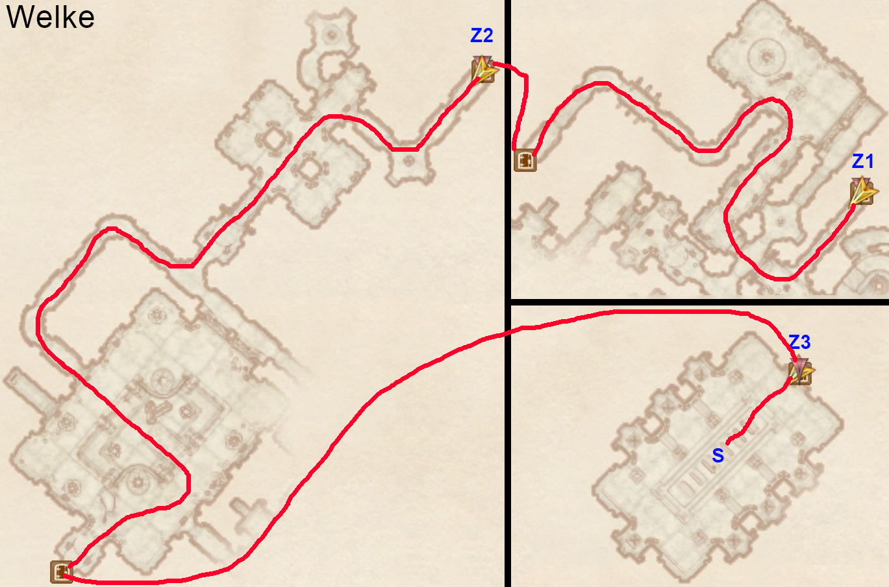

Oblivion 100% Speedrun Route (V3)
Made by Ben Songster (MeemawHustlin) with help from the PRCLive community.
- Enter the console commands
sdt 12andtdtbefore the run starts, and make sure your wait timer is set to 1 hour. If the game crashes at any point, enter thesdt 12andtdtconsole commands again. - Move the difficulty slider to the easiest setting (all the way left)
- Make your character a Male Redguard.
- Time starts as soon as you click "Continue" on the first tutorial box that appears. You are not allowed to move before that happens.
- Click continue on the quest pop-up to start the run. Press caps lock to always be sprinting, and press F3 to bring up the spell menu.
- Hotkey Flare and equip Adrenaline Rush.
- Cast Adrenaline Rush and Save Clip through the right front edge of the NE archway.
- When you clip through the wall, run to the east until you spawn back in bounds. This is called Void Warping. If the clip doesn’t work, try setting the quicksave up again and loading again.
- Jump up into the east archway and Save Clip through the seam between the two walls. Continue to run east after you clip until the black box is off the top of the screen, then wait until you Void Warp.
- Take the Chameleon and Flash Bolt scrolls, as well as the lockpicks and Iron Key off the Goblin corpse. Make a save. Make sure to write down the number of the save. It will be referred to as PermaKey_Save later.
- Open the door so that the popup shows up about using the Iron Key, and press escape to load the PermaKey_Save you just made. This glitches the game into allowing you to open most doors without needing to pick the lock.
- Continue linearly until you get past the square room with eight pillars. Pick up the Tomato, Cheese, and Rusty Iron Shield in the center of these pillars. Then hug the right wall to find a chest just past the next area with the light shafts. Take the Potions of Healing and Weak Potion of Sorcery from it.
- Continue linearly to the next area with a goblin. Take the Novice Mortar and Pestle from on top of the broken crate.
- Continue to the main large area with several goblins. Take the Repair Hammer and 18 gold from the locked chest by the Goblin Shaman.
- Continue until you get to the Imperial Subterrane. Fall down and use Flare to kill the Mythic Dawn Agent up on the SW ledge.
- Head SE and punch the Emperor six times to make them chase you. Run back to the door in the main area and yield when Glenroy is close enough to you.
- Kill the Mythic Dawn Agent when the door opens, then wait for the next door to open and kill the other Mythic Dawn Agents that appear.
- Run up to the Emperor and wait for him to talk to you.
a. Advance predetermined dialogue. b. Select The Steed as your birthsign. c. Advance all predetermined dialogue.
- Talk to Baurus, who will give you a torch.
- Use your hotkey to equip Flare again. Hit the Emperor once to get them to chase you, then run ahead and kill any Mythic Dawn Agents on your way. Yield to the Emperor when you are by the door to the next area.
- Make sure Baurus spawns in the next area when you go through the door. If he doesn’t you may need to go back through the door and enter the zone again.
- In the next area, hug the right wall and jump to the ledge across the gap. Save Clip facing west through the door. As soon as you clip through, curve around to the left and run SE until you Void Warp.
- Head SE down the hall and Flare the Mythic Dawn Agent.
- Head back and go through the Iron Gate and talk to Baurus.
- Advance predetermined dialogue.
- Make a custom class with the following: i. Specialization: Magic ii. Favored Attributes: Strength and Speed iii. Major skills: Acrobatics, Alteration, Conjuration, Destruction, Illusion, Mysticism, and Restoration
- Advance predetermined dialogue.
- Continue linearly through the rest of the tutorial, going back through the Iron Gate you opened.
- When you exit the sewer, change your race to a Female High Elf.
- tutorial is now complete.
- Fast travel to the Imperial City Market District and head WSW into the first archway, then hug the right wall until you find the Mystic Emporium.
- Wait until 8am, then talk to Calindil.
- Haggle to 50% sell value, then sell the Chameleon and Flash Bolt scrolls. Buy 2 of any Absorb scroll that costs 14 or less, and 1 of another Absorb scroll of the same or less cost.
- Dupe the 1 stack using the 2 stack, pick one up, then repeat and pick up all scrolls so that you have 3 of one scroll and 2 of another. Now, dupe the stacks back and forth until you have 512 of one and 768 of another.
- From the 768 stack, sell 200, 200, then 68 scrolls back to Calindil. From the 512 stack, sell 200, 200, then 62 scrolls. You should have 300 of one type, and 50 of another, as well as over 4,300 gold at the end.
- Read The Black Arts on Trial [Mysticism] skill book on the counter.
- Head SE to Red Diamond Jewelry. Talk to Hamlof Red-Tooth and buy the Brass Ring. Dupe about 300 lockpicks.
- Fast travel to Bravil.
- Wait until 1am and head between the first two buildings on the left to buy 1 Skooma from Nordinor.
- Drop the Skooma and pick it back up. Dupe the Skooma with the 50 scroll stack, and then the 300 scroll stack. Hotkey Skooma.
- Use the 8 potions glitch to increase your movement speed everywhere you go
- Be careful not to lose much of your fatigue bar when farming Acrobatics. If you pass out, wait an hour.
- Head SW towards the Mages Guild. Stop at the Chapel on your way.
- In the Chapel Hall downstairs, read 2920, Rain’s Hand (v4) [Restoration] on the left shelf, and take the Nirnroot from the south room.
- Go to the Mages Guild, wait until 9am, and talk to Kud-Ei.
- Dialogue: Join the Mages Guild.
- Dialogue: Yes, I want to join the guild. (This starts Join the Mages Guild)
- Dialogue: Recommendation.
- Dialogue: I’m ready.
- Dialogue: Varon Vamori.
- Dialogue: Mage’s Staff.
- Activate this quest in your journal.
- Follow Quest Marker to talk to Varon Vamori.
- Bribe to 65+ disposition.
- Dialogue: Ardaline.
- Dialogue: Mage’s Staff.
- Buy Spark from Delphine Jend.
- Take at least 4 Cheap Wine near the east corner of the ground floor.
- Take the Lesser Soul Gem from the SW bookshelf behind the back counter.
- Fast travel to Imperial City Talos Plaza District.
- Head NE, second door on the right to get to Soris Arenim’s House.
- Talk to Soris Arenim.
- Bribe to 70+ disposition.
- Dialogue: Mage’s Staff.
- Dialogue: It’s a deal.
- Fast travel to Quest Marker to talk to Kud-Ei.
- Dialogue: Mage’s Staff.
- [quest] Bravil Mages Guild is now complete.
- Fast travel to Anvil Main Gate.
- Head south to the Mages Guild and talk to Carahil.
- Dialogue: Recommendation.
- Dialogue: Yes, I’m ready.
- Dialogue: Go on.
- Fast travel to Horse Whisperer Stables and make your way to the Quest Marker to talk to Arielle Jurard.
- Follow Quest Marker to talk to Christophe Marane.
- Dialogue: Bed.
- Dialogue: I’m a merchant.
- Dialogue: I’ll take it.
- You will automatically be approached by Caminalda.
- Dialogue: Yes, that’s right.
- Go upstairs to your bed and wait 1 hour. Arielle Jurard will appear. Talk to her.
- Sleep in the bed for 1 hour.
- Heads towards the Quest Marker until Caminalda approaches you.
- Kill Caminalda and fast travel to Quest Marker to talk to Carahil.
- Dialogue: Rogue Mage.
- [quest] Anvil Mages Guild is now complete.
- Retrieve the Dragon’s Tongue and Nightshade in the upstairs library. The ingredients are on a table through the door in the NW corner of the library.
- Fast travel to Cheydinhal West Gate.
- Head SE around the back of the first building to enter the well.
- If this door does not open, load the PermaKey_Save and do the Perma Key glitch.
- Get the Nirnroot at the south end of the well.
- On the west end of the well, take the Ring of Burden off of Vidkun’s corpse.
- Exit the well and go around to the front of the south building to enter the Mages Guild.
- Head east down into the basement.
- Read The Firsthold Revolt [Mysticism] on the bookshelf next to the crystal ball at the bottom of the stairs.
- Head west and open the locked door, then open the locked drawers and take the Black Soul Gems.
- If this door does not open, load the PermaKey_Save and do the Perma Key glitch.
- Talk to Falcar. He may be anywhere in the building and is wearing black.
- Dialogue: Recommendation.
- Dialogue: Yes, I’m ready.
- Wait for the quest to update and find and talk to Deetsan. She is Argonian.
- Dialogue: Recommendation.
- Wait for the quest to update and talk to Deetsan again. Drop the Ring of Burden.
- [quest] Cheydinhal Mages Guild is now complete.
- After finishing the quest, follow the map below to get to the Mage Stone between 6pm-6am. Start from the stable outside of Cheydinhal, and make sure to discover Vahtacen, the cave SE past Harlun’s Watch on your way there.

- Fast travel to Chorrol North Gate. The Mages Guild is the second building on your right after going under the first building.
- Buy the spell Command Humanoid from Alberic Litte.
- Read A Game at Dinner [Alchemy] on the SE bookshelf of the main floor.
- Talk to Teekeeus.
- Dialogue: Recommendation.
- Dialogue: Earana.
- Make sure to activate the quest since another will automatically have been activated.
- Follow Quest Marker to talk to Earana.
- Yes, I’m interested.
- Walk towards an Argonian named Dar-Ma that is approaching you. You will automatically talk to her.
- Dialogue: Yes, I am. Pleased to meet you. (This sets up a later quest.)
- Follow Quest Marker to talk to Teekeeus.
- Dialogue: Fingers of the Mountain.
- Follow Quest Marker to find the Fingers of the Mountain book on the Charred Remains. It is fastest to do this by exiting Chorrol from the North Gate.
- Fast travel to the Mages Guild Quest Marker to talk to Teekeeus.
- Dialogue: Fingers of the Mountain.
- Dialogue: Here’s the book. (this completes the quest)
- Go outside and find Earana again. She may be at the Grey Mare near the south end of town.
- Advance predetermined dialogue.
- Dialogue: No, I won’t do that. (This completes Fingers of the Mountain, Part II.)
- Fast travel to Skingrad West Gate. Travel north up the hill. The Mages Guild will be the second building on your left.
- Buy Curse of Weakness from Druja, and Corrode Armor, Drain Skill: Illusion and Soul Trap from Sulinus Vassinus.
- Talk to Adrienne Berene.
- Dialogue: Recommendation.
- Dialogue: Yes, I’ll do it.
- Make sure to activate the quest.
- Fast travel to the stable outside of Skingrad. Head NNW until you find Bleak Flats Cave.
- Enter Bleak Flats Cave and kill the seven Deranged Zombies as you go through the cave. Look at the in game map to make sure you aren’t skipping sections of the cave.
- Talk to Erthor.
- Dialogue: Find your own way back.
- Read Lord Jornibret’s Last Dance [Light Armor] on the table.
- Exit the cave via the lever at the end of Erthor’s hideout and hug the left wall to get out faster.
- Fast travel to Quest Marker to return to the Mages Guild.
- Wait 1 hour, and then follow Quest Marker to talk to Adrienne Berene.
- Dialogue: Recommendation.
- This completes Skingrad Recommendation
- Go upstairs to the living quarters and take the Minotaur Horn out of the green display case.
- Go through the door across the hall and read Daughter of the Niben [Alteration] on the middle shelf.
- Fast travel to Leyawiin West Gate. Head south to the second building on your right to find the Mages Guild.
- Buy Dispel Other from Alves Uvenim.
- Find S’drassa in the Mages Guild and talk to him.
- Advance predetermined dialogue.
- Dialogue: Certainly. Please proceed. (This starts a later quest.)
- Dialogue: Garridan’s Tears.
- Talk to Dagail.
- Yes, I’ll help.
- Make sure to activate this quest in your journal. Follow Quest Marker to talk to Agata.
- Dialogue: Seer’s Stone.
- Find the Quest Marker pointing to Kalthar.
- Dialogue: Seer’s Stone.
- Follow Quest Marker to talk to Agata.
- Dialogue: Seer’s Stone.
- Follow Quest Marker to talk to Dagail.
- Fast travel to Leyawiin North East Gate and exit the city to go to the Quest Marker.
- Take the first right and Save Clip through the left side of the gate, then proceed through the door to the next area.
- If this door does not open, load the PermaKey_Save and do the Perma Key glitch.
- Proceed to the coffin the Quest Marker is pointing to and take Manduin’s Amulet from it.
- If this door does not open, load the PermaKey_Save and do the Perma Key glitch.
- Kalthar will talk to you automatically as you leave the dungeon. Answer however you want and then kill him.
- Exit the fort and fast travel to Quest Marker to talk to Dagail.
- Dialogue: Seer’s Stone.
- Exit dialogue and talk to Dagail again.
- This completes Leyawiin Recommendation
- Fast travel to Bruma East Gate and head to the Mages Guild at the north end of the raised middle section of buildings.
- Talk to Jeanne Frasoric.
- Dialogue: Recommendation.
- Dialogue: J’skar
- Equip Minor Life Detection and cast it, looking for an invisible NPC. He will likely be downstairs.
- When you find him, equip and cast Dispel Other on him.
- Talk to J’skar.
- Downstairs, read The Wolf Queen, v 3 [Illusion] on the desk in the room with the two beds, take the Redwort Flower on the bookshelf from the adjacent room down the hall, and take the Glow Dust from the back table in the room across the hallway.
- Follow Quest Marker to talk to Jeanne Fraosric.
- Dialogue: J’skar.
- This completes Bruma Recommendation
- Fast travel to Quest Marker to talk to Raminus Polus.
- Dialogue: Recommendation. (This completes Join the Mages Guild)
- Talk to Raminus Polus again.
- Dialogue: Tasks.
- Dialogue: Mage’s Staff.
- Open the display case and take the 2 filled Grand Soul Gems and the 1 Empty Grand Soul Gem. This will require spamming auto-attempt until level 25 Security, then locking in one tumbler manually and auto-attempting until it opens.
- Exit the Arcane University and move towards the Quest Marker.
- Once inside Wellspring Cave, go to the door at the end of the cave and exit outside.
- If this door does not open, load the PermaKey_Save and do the Perma Key glitch.
- Once outside, kill the Necromancer that approaches you along with the other two. A quest update will appear when they are all dead.
- Take the Unfinished Staff from the stone chest.
- Fast travel to Quest Marker to talk to Raminus Polus.
- Dialogue: Necromancers.
- Follow Quest Marker to talk to Delmar.
- Dialogue: Mage’s Staff.
- Dialogue: Yes.
- Dialogue: Illusion
- Dialogue: Paralyze
- Dialogue: That’s what I want.
- Wait until 12am the next day and take the Mage’s Staff of Paralysis from the cupboard in the back of the room. Keep the staff.
- This completes A Mage's Staff
- Read Before the Ages of Man [Mysticism] on the altar to your immediate right.
- Go outside and head left into the Lustratorium and read Song of the Alchemists [Alchemy] on the bookshelf on the back wall.
- Next, exit and start heading to the right towards the farthest door. On the way, go into the Mage’s Quarters and grab the Nirnroot in the side room on the main floor. Leave and continue moving towards the far end of the Arcane University.
| Spell | Effects |
|---|---|
| D_DisposDrain | Command Humanoid (On Touch, 4 magnitude, 0 area, 1 second) |
- To farm gold, start by fast traveling to the Imperial City Talos Plaza District. Head SSE and go into Dorian’s House. Equip D_DisposDrain and take off any armor if you are wearing it.
- Repeat the following sequence 12 times:
- Cast D_DisposDrain on Dorian.
- Bribe Dorian to max disposition (should be around 90).
- Use the Mage’s Staff of Paralysis on Dorian. Immediately pickpocket him once he is paralyzed to avoid getting a massive bounty. Spam click the gold in his inventory until you have 425,000 gold. You should get about 1,000 gold per click.
- Once you are done with that, drop the staff. Go outside and talk to a guard to pay the 40 gold for your fine.
- Return to the Arcane University and go to the Chironasium, which is the second farthest right door.
- Dupe the filled Grand Soul Gems so that you have 35 to use for enchanting. Dupe the Brass Ring until you have 34 of them.
- Drop 48 of your 50 scroll stack so that you have a 2 scroll stack. Drop all Skooma except for one and stop drinking it for now.
- Do the following sequence:
- Enchant the Brass Ring to Fortify Strength 10 points using a filled Grand Soul Gem. Make sure the name of the ring is unique, so name them incrementing numbers as you go.
- Dupe the ring using a 2 scroll stack.
- Pick up duped rings and equip one copy of it.
- Use the 2 scroll stack to dupe again, dropping the copy that is not equipped.
- You now have a permanent +10 Strength glitched onto your character.
- Repeat this process a total of 5 times for a +50 Strength bonus (85 total). Repeat again for the remaining 29 rings selecting Speed instead of Strength to get +290 Speed (355 total). Make sure to keep 1 Filled Grand Soul Gem, and pick up the 48 scrolls you dropped.
- Head back to the Praxographical Center (the last door at the far end).
The order of the effects needs to be exactly as listed in order for the spells to farm the right skill:
| Spell | Effects |
|---|---|
| A_Alt | Shield (On Touch, 3%, 1 second) Fortify Magicka (Self, 21 points, 2 seconds) |
| A_Conj | Turn Undead (On Touch, 0 points, 1 second) Fortify Magicka (Self, 21 points, 2 seconds) |
| A_Dest | Damage Fatigue (On Touch, 3 points, 1 second) Fortify Magicka (Self, 21 points, 2 seconds) |
| A_Illus | Light (On Touch, 3 ft, 1 second) Fortify Magicka (Self, 21 points, 2 seconds) |
| A_Myst | Dispel (On Touch, 3 points) Fortify Magicka (Self, 21 points, 2 seconds) |
| A_Rest | Fortify Magicka (Self, 21 points, 2 seconds) Light (On Touch, 3 ft, 1 second) |
Go back to the Arcane University and make more spells:
| Spell | Effects |
|---|---|
| B_Acrobatics | Fortify Acrobatics (Self, 100 points, 1 second) |
| B_Alchemy | Fortify Alchemy (Self, 100 points, 1 second) |
| B_Alteration | Fortify Alteration (Self, 100 points, 1 second) |
| B_Armorer | Fortify Armorer (Self, 100 points, 1 second) |
| B_Athletics | Fortify Athletics (Self, 100 points, 1 second) |
| B_Blade | Fortify Blade (Self, 100 points, 1 second) |
| B_Block | Fortify Block (Self, 100 points, 1 second) |
| B_Blunt | Fortify Blunt (Self, 100 points, 1 second) |
| B_Conjuration | Fortify Conjuration (Self, 100 points, 1 second) |
| B_Destruction | Fortify Destruction (Self, 100 points, 1 second) |
| B_HandtoHand | Fortify Hand to Hand (Self, 100 points, 1 second) |
| B_HeavyArmor | Fortify Heavy Armor (Self, 100 points, 1 second) |
| B_Illusion | Fortify Illusion (Self, 100 points, 1 second) |
| B_LightArmor | Fortify Light Armor (Self, 100 points, 1 second) |
| B_Marksman | Fortify Marksman (Self, 100 points, 1 second) |
| B_Mercantile | Fortify Mercantile (Self, 100 points, 1 second) |
| B_Mysticism | Fortify Mysticism (Self, 100 points, 1 second) |
| B_Restoration | Fortify Restoration (Self, 100 points, 1 second) |
| B_Security | Fortify Security (Self, 100 points, 1 second) |
| B_Sneak | Fortify Sneak (Self, 100 points, 1 second) |
| B_Speechcraft | Fortify Speechcraft (Self, 100 points, 1 second) |
| C_Armorer | Drain Armorer (Self, 100 points, 1 second) |
| C_Athletics | Drain Athletics (Self, 100 points, 1 second) |
| C_Blade | Drain Blade (Self, 100 points, 1 second) |
| C_Block | Drain Block (Self, 100 points, 1 second) |
| C_Blunt | Drain Blunt (Self, 100 points, 1 second) |
| C_HandtoHand | Drain Hand to Hand (Self, 100 points, 1 second) |
| C_HeavyArmor | Drain Heavy Armor (Self, 100 points, 1 second) |
| C_LightArmor | Drain Light Armor (Self, 100 points, 1 second) |
| C_Marksman | Drain Marksman (Self, 100 points, 1 second) |
| C_Mercantile | Drain Mercantile (Self, 100 points, 1 second) |
| C_Security | Drain Security (Self, 100 points, 1 second) |
| C_Sneak | Drain Sneak (Self, 100 points, 1 second) |
| C_Speechcraft | Drain Speechcraft (Self, 100 points, 1 second) |
Exit the spellmaking altar. Cast B_Destruction and immediately activate the altar to make this spell:
| Spell | Effects |
|---|---|
| D_ArmorerFarm | Disintegrate Armor (Self, 100 points, 1 second) Fortify Magicka (Self, 100 points, 2 seconds) Light (Touch, 3 points, 1 second) |
You should now start farming Acrobatics constantly for the rest of the run. Unfortunately, you cannot spam your farming spells during this part since the investing spell requires magicka.
Do the following additional tasks at various peoples’ stores/homes:- Follow the red line on each map to each numbered location and do the tasks listed.
- Whenever instructed to Invest, cast the B_Mercantile spell and immediately talk to the NPC, then select the “Invest 500 gold in this shop” dialogue option.
- Whenever instructed to start a training quest, cast the B_[Skill] spell and immediately talk to the NPC, then select the “Training” dialogue option.

- Mach-Na’s Books:
- Invest in Mach-Na.
- Buy and read Advances in Lock Picking [Security].
- Nirnroot in the upstairs bedroom.
- Invest in Mach-Na.
- The March Rider:
- Invest in Tertia Viducia.
- Mages Guild:
- Invest in Eilonwy.
- Willow Bank:
- Read Incident in Necrom [Illusion] on the second floor table by the bed.
- Nirnroot next to the bridge.
- Riverview:
- Nirnroot at top of stairs.
- Ganredhel’s House:
- Talk to Ganredhel to start the Acrobatics Training quest using B_Acrobatics. Wait until 1pm-2pm before entering the house.
- Read A Dance in Fire, v1 [Acrobatics] on the dresser upstairs.
- The Great Chapel of Arkay:
- Talk to Gruiand Garrana to start the Speechcraft Training quest using B_Speechcraft.
- Talk to Ohtesse downstairs in the Chapel Hall to start the Restoration Training quest using B_Restoration.
- Misc:
- Fast travel to Castle Cheydinhal and go through the first door on the left inside the hall to talk to Ra’qanar and start the Hand to Hand Training quest using B_HandtoHand.
- Fire and Steel:
- Invest in Rasheda.
- Invest in Sabine Laul if she is here.
- Read 2920, Mid Year (v6) [Heavy Armor] on a shelf upstairs.
- Fighters Guild:
- Invest in Sabine Laul if you haven’t. Usually in the basement.
- Talk to Lum gro-Baroth to start the Block Training quest using B_Block. Usually in the basement.
- If he is not in the basement, check the back outdoor area.
- If Honditar is there, start the Athletics Training quest using B_Athletics.
- Mages Guild:
- Invest in Angalmo.
- Talk to Alberic Litte to start the Conjuration Training quest using B_Conjuration.
- Talk to Athrager to start the Alteration Training quest using B_Alteration.
- Get the Silver Pitcher and 4 Silver Glasses on the second floor library.
- Outside by tree:
- If you haven’t talked to Honditar, wait until 10am to 8pm to talk to him and start the Athletics Training quest using B_Athletics.
- The Oak and Crosier:
- Invest in Talasma.
- Northern Goods and Trade:
- Invest in Seed-Neeus.
- Start the Mercantile Training quest by using B_Mercantile.
- Buy 5 levels of Mercantile training using C_Mercantile.
- Renoit’s Books:
- Invest in Estelle Renoit.
- Read Vernaccus and Bourlor [Marksman], on the middle of three shelves.
- Chapel of Stendarr:
- Read Notes on Racial Phylogeny [Restoration] in the Chapel Hall, west side room in a chest.
- Casta Scribonia’s House:
- Nirnroot upstairs.
- Read A Dance in Fire, v6 [Mercantile], upstairs on a shelf.

- Chapel of Dibella:
- Read 2920, Frostfall (v10) [Conjuration] in the Chapel Hall on a desk in the east side room.
- Heinrich Oaken-Hull’s House:
- Nirnroot upstairs in a side room.
- Nirnroot by the statue.
- Fighters Guild:
- Talk to Azzan to start the Blunt Training quest using B_Blunt.
- Dialogue: Join the Fighters Guild.
- Dialogue: Yes. Sign me up. (This completes Join the Fighters Guild.)
- Dialogue: Contract.
- Dialogue: Rats. (This starts a future quest.)
- Talk to Rhano to start the Blade Training quest using B_Blade.
- Talk to Azzan to start the Blunt Training quest using B_Blunt.
- Mages Guild:
- Invest in Felen Relas.
- Morvayn’s Peacemakers:
- Invest in Varel Morvayn.
- The Count’s Arms:
- Invest in Wilbur.
- Talk to Velwyn Benirus (to the left of Wilbur).
- Dialogue: Manor.
- Dialogue: Yes, here’s 5,000 gold. (This starts a future quest.)
- Pinarus Inventius’ House:
- Talk to Pinarus Inventius.
- Bribe to max disposition and start the Marksman Training quest using B_Marksman.
- Talk to Pinarus Inventius.
- Office of Imperial Commerce:
- Talk to Vinicia Melissaeia to buy the house. (You may have to bribe her)
- Read The Wolf Queen, v 4 [Mercantile] on the counter in front of her.
- The Best Defense:
- Invest in Maro Rufus.
- Invest in Varnado.
- Start the Heavy Armor Training quest using B_HeavyArmor.
- The Gilded Carafe:
- Invest in Claudette Perrick.
- Nirnroot in the back of the room.
- Slash ‘N Smash:
- Invest in Urbul gro-Orkulg.
- Mystic Emporium:
- Nirnroot in the Private Quarters upstairs in the side room.
- Divine Elegance:
- Invest in Palonirya.
- Dialogue: Training. (This completes the Mercantile Training quest.)
- Rindir’s Staffs:
- Invest in Rindir.
- Buy the Apotheosis staff. Equip this as your main weapon for the rest of the run. Dupe and Hotkey 300 filled Grand Soul Gems and use these to recharge the staff when it runs out of charge. Make sure to dupe Grand Soul Gems if you ever run low.
- Black Horse Courier:
- Read 2920, Sun’s Height (v7) [Mercantile] on the back desk.
- Three Brothers Trade Goods:
- Invest in Tertullian Verus.
- Invest in Sergius Verus.
- Buy All home furnishings to complete Buy a house in the Imperial City
- Buy 1 bear pelt.
- Jensine’s “Good as New” Merchandise:
- Invest in Jensine.
- Dialogue: Thoronir.
- Dialogue: Start from the beginning. (This starts a future quest)
- Invest in Jensine.
- The Feed Bag:
- Invest in Delos Fandas.
- Red Diamond Jewelry:
- Invest in Hamlof Red-Tooth.
- Outside courtyard:
- Acquire Yarn from the crates outside.
- The Main Ingredient:
- Invest in Ogier Georick.
- A Fighting Chance:
- Invest in Rohssan.
- Start Armorer Training quest using B_Armorer spell.
- Read Last Scabbard of Akrash [Armorer] in the Private Quarters upstairs side room on the top shelf.
- Invest in Rohssan.
- The Merchants Inn:
- Invest in Velus Hosidius.
- First Edition:
- Invest in Phintias.
- Buy and read The Armorer’s Challenge [Armorer].
- Read Cherim’s Heart of Anequina [Armorer] in the Private Quarters upstairs on a desk.
- Invest in Phintias.
- The Copious Coinpurse:
- Invest in Thoronir.
- Dialogue: Inventory
- Dialogue: Where do you get it?
- Invest in Thoronir.
- Stonewall Shields:
- Invest in Viator Accius.
- Talk to an Argonian named Gin-Wulm wandering around this district from 9am to 12pm.
- Dialogue: Training.
- Dialogue: He won the Armorer’s Challenge.
- This completes the Armorer Training quest.
- Irene Metrick’s House:
- Kill Irene Metrick to complete the Blunt Training quest, then pay the gold fine. Fast travel back to the Elven Gardens and resume the route.
- Guard House:
- Read A Dance in Fire, v2 [Block] on the table by the stairs.
- Dovyn Aren’s House:
- Read The Dragon Break [Alteration] upstairs on the table next to the desk on top of the red book.
- Othrelos’ House:
- Talk to Othrelos to start the Sneak Training quest using B_Sneak. He will be in his house from 6pm to 8pm except on the 7th and 8th of each month. Try waiting until 1pm to catch him leaving his house if this doesn’t work.
- Talk to Mandil to start the Security Training quest using B_Security. She can be very hard to find, just keep waiting 24 hours and entering Othrelos’ house around 6pm to 8pm to find her eventually.

- The Tiber Septim Hotel:
- Invest in Augusta Calidia.
- Bribe Ontus Vanin to full disposition between 12pm and 2pm on any day but Sundas or Loredas.
- Samuel Bantien’s House:
- Nirnroot upstairs.
- Ralsa Norvalo will talk to you automatically at some point. Wait outside if she doesn’t do this before you finish the other tasks.
- Dialogue: I’m sorry, and you are?
- Dialogue: Sure, how can I help?
- Advance predetermined dialogue. (This starts a future quest.)
- The Temple of the One:
- Talk to Tandilwe.
- Dialogue: Training.
- Go outside in the Temple District and kill Ragbag Buntara. (Pay gold fine to guard if caught.)
- Return to Tandilwe and talk to her again.
- Dialogue: Training. (This completes the Speechcraft Training quest.)
- Talk to Tandilwe.
- Salomon Geonette’s House:
- Nirnroot upstairs.
- Marana Rian’s House:
- Wait until 6am-noon to kill Marana Rian to complete the Sneak Training quest. Pay the gold fine to a guard if you get caught.
- Hastrel Ottus’ House:
- Read The Wolf Queen, v 5 [Speechcraft] on table.
- The All-Saints Inn:
- Invest in Willet.
- Invest in Shady Sam by fast traveling to Chestnut Handy Stables outside the city and heading north to find him along the city wall.
- City-Swimmer’s House (Top Floor):
- Nirnroot in the house.
- Read 2920, Last Seed (v8) [Sneak] on drawers.
- Silverhome on the Water:
- Invest in Gilgondorin.
- Nirnroot on the third floor, right side room.
- The Fair Deal:
- Invest in Nilawen.
- Invest in Nordinor if he is here. He is usually upstairs behind a locked door.
- Andragil’s House (Top Floor):
- Start her training and kill Andragil to complete the Block Training quest.
- Nirnroot by the bed.
- Dro’shanji’s House:
- Read The Wolf Queen, v 1 [Security] on the shelf upstairs.
- Fighters Guild:
- Invest in Tadrose Helas.
- Nirnroot on the second floor, turn right, first door on your left.
- Mages Guild:
- Invest in Ardaline.
- Talk to Ardaline to start the Alchemy Training quest using B_Alchemy.
- Talk to Delphine Jend to start the Destruction Training quest using B_Destruction.
- Talk to Ita Rienus (usually in the basement) to start the Mysticism Training quest using B_Mysticism.
- Talk to Kud-Ei to start the Illusion Training quest using B_Illusion.
- Read The Horrors of Castle Xyr [Destruction] on the third floor. (Large brown book on the shelf)
- Nirnroot outside behind the Mages Guild.
- The Lonely Suitor Lodge:
- Invest in Bogrum Gro-Galash.
- Invest in Luciana Galena if she is here.
- Talk to her to start the Light Armor Training quest using B_LightArmor.
- Invest in Nordinor if you haven’t already, who is usually upstairs.
- The Archer’s Paradox:
- Invest in Daenlin.
- Luciana Galena’s House (Top Floor):
- Invest in Luciana Galena if you haven’t already.
- Talk to her to start the Light Armor Training quest using B_LightArmor.
- Invest in Luciana Galena if you haven’t already.
- Nirnroot outside, behind Luciana Galena’s House.
- Fast travel to Castle Bravil, and head SW along the wall to find another Nirnroot.

- Castle Bruma:
- Wait outside the castle until Tolgan talks to you.
- Advance predetermined dialogue. (This starts a future quest.)
- Enter the castle and talk to Countess Narina Carvain.
- Advance predetermined dialogue.
- Bribe to 60+ disposition.
- Dialogue: Buy a house in town.
- Dialogue: I’ll gladly pay 10,000 gold for it.
- Dialogue: Draconian Madstone.
- Dialogue: Pale Pass.
- Dialogue: Yes.
- Dialogue: Draconian Madstone.
- Dialogue: Yes.
- Nirnroot in Lord’s Manor. Enter through the Service Hall, then start sneaking and go through the door on the left, then the next door on the left, where the Nirnroot is. Pay the gold fine to a guard if you get caught.
- Read How Orsinium Passed to Orcs [Heavy Armor] on the desk in the Countess’ bedroom on your way out.
- Wait outside the castle until Tolgan talks to you.
- Nord Winds:
- Invest in Skjorta.
- Invest in Olfand.
- Novaroma:
- Invest in Karinnarre.
- Invest in Suurootan.
- Buy All home furnishings to complete Buying a house in Bruma.
- Jerall View Inn:
- Invest in Hafid Hollowleg.
- Bradon Lirrian’s House:
- Talk to Carius Runellius to start the quest.
- Bribe him to 70+ disposition.
- Dialogue: Raynil Dralas
- Talk to Erline Lirrian.
- Advance predetermined dialogue.
- Talk to Carius Runellius to start the quest.
- Regner’s House:
- Nirnroot downstairs.
- Read A Dance in Fire, v5 [Marksman] on a table downstairs.
- Olav’s Tap and Tack:
- Invest in Olav.
- Go upstairs and open the furthest door. Take the journal behind the drawers.
- If this door does not open, load the PermaKey_Save and do the Perma Key glitch.
- Mages Guild:
- Invest in Selena Orania.
- Hammer and Axe:
- Invest in Fjotreid.
- Toutius Sextius’ House:
- Nirnroot on the third floor.
- Hammer and Tongs:
- Invest in Agnete the Pickled.
- All Things Alchemical:
- Invest in Falanu Hlaalu.
- Read De Rerum Dirennis [Alchemy] on a shelf upstairs.
- Surilie Brothers’ House:
- Nirnroot on the third floor, furthest side door. Boost jump up to the balcony to break in.
- Two Sisters Lodge:
- Invest in Mog gra-Mogakh.
- The Great Chapel of Julianos:
- Head into the Chapel Hall. Go into the first side room on your left and read 2920, Sun’s Dawn (v2) [Mysticism].
- Head to the side room directly across the hall to read The Exodus [Restoration] in the Chapel Hall on the middle shelf in the south side room.

- Five Claws Lodge:
- Invest in Witseidutsei.
- Invest in Dar Jee. Wait until around 12pm for him to appear.
- The Great Chapel of Zenithar:
- In the Chapel Hall, read Sithis [Alteration] in the south side room on the desk.
- The Dividing Line:
- Invest in Tun-Zeeus.
- Nirnroot by the rocks.
- Three Sisters’ Inn:
- Invest in Shuravi.
- Southern Books:
- Invest in Bugak gro-Bol.
- Read Reality & Other Falsehoods [Alteration] on the second floor. (Top shelf of bookshelf next to small table.)
- Nirnroot by a cluster of rocks.
- Nirnroot by rocks.
You should now have 56 Stores Invested In.
Farm Acrobatics and your hotkeyed A_[Skill] spells everywhere you go while blocking with your weapon to speed up the casting animation, but make sure not to level up skills too far. Reading skill books for a maxed out skill will not count, and ruin the run. Stop at level 75 for each magic skill for now.
Warning: The Destruction and Conjuration farming spells will make NPCs hostile if they are touched with the spell, so avoid doing this.
General tip about questing: If you are ever unable to fast travel after exiting a dungeon, try quicksaving and quickloading while outdoors, which can despawn enemies that were aggro inside the dungeon. This is called the QSQL De-Aggro glitch.
- Fast travel to the Arcane University.
- Dupe 21 Dragon’s Tongues and 20 Redwort Flower, but only pick up the Dragon’s Tongues.
- Get caught pickpocketing someone in the Mages Guild.
- Wait for the quest to update and talk to Raminus Polus.
- Dialogue: Yes, I’ll do it.
- Talk to Raminus Polus again.
- Dialogue: Here they are.
- This completes Mages Guild Suspension
- Dupe 20 Dragon’s Tongues, and pick them up as well as the 20 Redwort Flower you duped earlier.
- Pickpocket a different Mages Guild member and get kicked out again.
- Wait for the quest to update, and talk to Raminus Polus again.
- Dialogue: Yes, I’ll do it.
- Talk to Raminus Polus again.
- Dialogue: Here they are. (This completes Mages Guild Second Suspension)
- Dialogue: Advancement.
- Dialogue: Tasks.
- Fast travel to Quest Marker and enter the County Hall.
- Wait until 8am and talk to Mercator Hosidus.
- Wait 24 hours and talk to Mercator Hosidus again.
- Fast travel to the stable outside of Skingrad and buy a horse from Ugak gra-Mogakh.
- Dialogue: Buy a horse
- Dialogue: I can afford 1000 gold for a horse. (Completes Bay Horse)
- Travel to Quest Marker and wait until 2am.
- Kill Mercator and the necromancers when they appear. If Glarthir is here, make sure he does not die.
- Janus Hassildor will approach you from the west and talk to you.
- Dialogue: Go on.
- Dialogue: Go on.
- Advance predetermined dialogue.
- Fast travel to Vahtacen, which should already be discovered SE of Cheydinhal.
- Go into the ruins to find a giant pillar in the middle of a room. Take the Sever Magicka and Elevate Magicka scrolls from the chest near the entrance to this room.
- If this door does not open, load the PermaKey_Save and do the Perma Key glitch.
- Stand directly in front of the pillar and use Apotheosis on it, then the Cold Touch spell, Sever Magicka scroll, and Elevate Magicka scroll on the pillar in that order. Some of these are on touch, so stand right in front of the pillar. Activate this quest in your journal.
- Once the pillar is open, proceed to the second area. Head linearly through it, killing the ghosts that appear on your sides after hitting the first pressure plate.
- Take Ectoplasm from one of the ghosts.
- Once you get to the large area, boost jump off the stairs to make it up to where the helm is.
- Hit the button on one of the pillars next to the helm and take the Ancient Elven Helm.
- Head SE to exit out of the passage that opens up.
- Follow Quest Marker to talk to Skaleel.
- Fast travel to the Arcane University and talk to Raminus Polus. Wait until 9am if he is not there.
- Dialogue: Janus Hassildor.
- Dialogue: Advance predetermined dialogue. All options are eventually forced.
- Dialogue: Advancement. (Rewards Spelldrinker Amulet. Keep it.) (This completes Ulterior Motives)
- Activate the Vahtacen’s Secret quest and follow Quest Marker to talk to Irlav Jarol.
- Talk to Raminus Polus again.
- Dialogue: I’m ready. What is it?
- Advance predetermined dialogue.
- Dialogue: Advancement. (This completes Vahtacen's Secret)
- Follow Quest Marker to find the Mystic Archives.
- To your immediate right is the book Necromancer’s Moon. Take the book and talk to Tar-Meena.
- Dialogue: I was sent to see you.
- Dialogue: Tell me about Black Soul Gems.
- Read Mannimarco, King of Worms [Alchemy] in the eastern display case, Response to Bero’s Speech [Destruction] on the middle shelf to the right, Fighters Guild History, 1st Ed. [Heavy Armor] in the south display case, then go upstairs and read The Argonian Account, Book 3 [Illusion] on the shelf directly to the right of the small display case, and read Liminal Bridges [Conjuration] in the larger display case.
- Follow Quest Marker to talk to Raminus Polus.
- Dialogue: Necromancer’s Moon.
- Follow Quest Marker to talk to Bothiel.
- Dialogue: Shade of the Revenant.
- Follow Quest Marker to talk to Raminus Polus.
- Dialogue: Shade of the Revenant.
- Fast travel to Quest Marker to find the Dark Fissure.
- Go inside the cave and kill the Worm Anchorite by the entrance.
- Take the Handwritten Note off his corpse. The quest won’t update until you kill hostile enemies.
- Fast travel to Quest Marker to talk to Raminus Polus.
- Dialogue: Necromancers.
- Dialogue: Advancement. (This completes Necromancer's Moon)
- Dialogue: Tasks.
- Follow Quest Marker to talk to Hannibal Traven.
- Dialogue: Tasks.
- Dialogue: Yes.
- Dialogue: Who is the Informant?
- Dialogue: Go on.
- Dialogue: What am I supposed to do?
- Dialogue: Where am I supposed to go?
- Dialogue: Very well.
- Fast travel to Quest Marker to enter Nenyond Twyll. Talk to Fithragaer.
- Dialogue: I was sent here.
- Fithragaer has to die for the quest to continue correctly, so make sure the trap kills him.
- Go through the dungeon. In the second zone, kill Mariette Rielle before she talks to you.
- When you get to the Quest Marker, there is a button to the left of the wall that will open it up to reveal a zombie named Mucianus Alias. Try to talk to him to progress the quest.
- Leave the dungeon and fast travel to the Quest Marker to talk to Hannibal Traven.
- Dialogue: Mucianus Alias.
- Talk to Raminus Polus in the Arch-Mage’s Lobby.
- Dialogue: Advancement. (This completes Liberation or Apprehension?)
- Talk to Hannibal Traven, who is usually upstairs in the same building.
- Dialogue: Tasks.
- Dialogue: I’m ready.
- Fast travel Castle Skingrad and enter the Courtyard.
- Break into the Lord’s Manor, which is the SW door up on the higher walkway outside.
- Go down the hallway into the main bedroom to talk to Janus Hassildor.
- Dialogue: Information.
- Dialogue: What’s the problem?
- Read A Hypothetical Treachery [Destruction] on the shelf to the right of the bed, and read The Wolf Queen, v 2 [Hand to Hand] on the south bookshelf.
- Go back to the courtyard, enter the county hall, and look for Shum gro-Yarug. If he is not in the main area, try waiting until around 2pm-8pm. Talk to him with your weapon out.
- Bribe him to max disposition.
- Exit dialogue and put the weapon away, talk to Shum gro-Yarug again.
- Dialogue: Buy a house in town.
- Dialogue: It’s a great deal at 25,000 gold.
- Go to the Quest Marker pointing to Bloodcrust Cavern. Quicksave.
- Kill all the vampires in the cave and take the Vampire Dust off of two of the corpses.
- If you get the disease Porphyric Hemophilia, quickload.
- Wait until noon, then fast travel to the most southern Quest Marker of the four to talk to Eridor.
- Dialogue: [Lie] Yes, that’s right.
- Dialogue: I have information for you.
- Dialogue: They’re already dead.
- Dialogue: Yes, here’s some Vampire Dust.
- Fast travel back to Castle Skingrad to talk to Janus Hassildor via the Lord’s Manor door.
- Dialogue: Information.
- Fast travel to Quest Marker to talk to Hannibal Traven.
- Dialogue: Mannimarco. (This completes Information at a Price)
- Wait 48 hours and talk to Hannibal Traven.
- Dialogue: I can go now.
- Fast travel to Quest Marker to enter the Bruma Mages Guild.
- Jump off the counter to get over the flaming bookcase.
- Kill Camilla Lollia before she talks to you. J’skar will appear and talk to you automatically.
- Dialogue: King of Worms.
- Quick save and quick load as soon as you exit the building to deaggro the enemies.
- Fast travel to Quest Marker to talk to Hannibal Traven.
- Dialogue: J’skar. (This completes A Plot Revealed)
- Talk to Raminus Polus in the Arch-Mage’s Lobby.
- Dialogue: Advancement.
- Talk to Hannibal Traven.
- Dialogue: Bloodworm Helm.
- Dialogue: Necromancer’s Amulet.
- Activate The Bloodworm Helm quest and fast travel to Quest Marker.
- Follow the Quest Marker to find Irlav Jarol’s corpse at the end of the cave. Take the Bloodworm Helm from the corpse.
- Activate The Necromancer's Amulet quest.
- Follow Quest Marker to exit the fort from a new pathway that becomes available.
- Fast travel to Quest Marker to enter Fort Ontus.
- Go straight across the first bridge, then hug the left wall to get to the next zone.
- Hug the left wall to go through a locked gate and drop down. Talk to Caranya.
- Dialogue: Necromancer’s Amulet.
- Kill Caranya and take the Necromancer’s Amulet off her corpse.
- Exit the fort. You can boost jump off the cauldron and stone slabs to make it out the way you came in.
- Fast travel to Quest Marker to talk to Hannibal Traven.
- Dialogue: Bloodworm Helm. (This completes The Bloodworm Helm)
- Dialogue: Necromancer’s Amulet. (This completes The Necromancer's Amulet)
- Talk to Raminus Polus in the Arch-Mage’s Lobby.
- Dialogue: Advancement.
- Go upstairs and talk to Hannibal Traven.
- Dialogue: Tasks.
- Dialogue: Go on.
- Fast travel to Quest Marker, making sure not to get caught by enemies.
- Talk to Thalfin. Follow her and wait for her to talk to you again.
- Dialogue: So, what do we do now?
- Dialogue: Positions.
- Dialogue: Keep your distance.
- Talk to the other two mages and tell them to also keep their distance.
- Head towards Silorn by curving around the rocks SW and sneaking up to the door.
- Kill Falcar when he appears. Take the Colossal Black Soul Gem from his corpse.
- Fast travel to Quest Marker to talk to Hannibal Traven.
- Dialogue: Black Soul Gem. (This completes Ambush)
- Keep talking to Hannibal Traven.
- Dialogue: Tasks.
- Dialogue: I’m ready.
- Fast travel to the stable outside of Bruma and buy a horse from Petrine.
- Dialogue: Buy a horse.
- Dialogue: 500 gold is affordable. I’ll take it.
- Discover the Cloud Ruler Temple location just north of Bruma on your way to Echo Cave.
- Kill the necromancer outside and enter the cave.
- If this door does not open, load the PermaKey_Save and do the Perma Key glitch.
- Make your way through the cave until you reach Mannimarco. Everything is linear.
- Start attacking Mannimarco and he will potentially talk to you anyway. If this happens, it doesn’t matter what dialogue options you choose.
- Kill Mannimarco and exit the cave. Avoid falling into the water. There is a separate exit path that the Quest Marker will direct you towards.
- Fast travel to Quest Marker to talk to Raminus Polus.
- Dialogue: Ingredient Collection. (This completes Confront the King)
- Follow Quest Marker to invest in Julienne Fanis using the B_Mercantile spell.
- Dialogue: Ingredient Collection.
- Dialogue: Garridan’s Tears.
- Dialogue: No tales. Where can I find the Tears?
- Advance predetermined dialogue. (This progresses another quest.)
- Go into the Arch-Mage’s Quarters and get the Imp Gall that is under the baskets by the bed, as well as the Nirnroot.
The main quest must be partially completed in order to fully encounter all the random Oblivion gates on the map, so do the main quest up through Dagon Shrine. After completing this quest, all random Oblivion gates will be able to spawn while exploring the map,and the chance of encountering one doubles, making it optimal to do this quest before starting to explore the map.
- Fast travel to Quest Marker to talk to Jauffre.
- Select the top dialogue option every time.
- This completes Deliver the Amulet
- Fast travel to Kvatch and head towards Quest Marker and enter the Oblivion portal.
- Jump around the gates on the bridge and make your way to the main tower directly in front of you.
- Quicksave and attempt to harvest the Bloodgrass to the right of the entrance to the tower until you succeed.
- Make your way up the tower without going to any outside bridges until you reach the Sigillum Sanguis.
- If any door does not open, load the PermaKey_Save and do the Perma Key glitch.
- Make a save in front of the door. This will be the Sigil_Save later.
- Collecting the Sigil Stone and falling down after waiting a few seconds will exit the area early.
- Once you have closed the gate, activate the Breaking the Siege of Kvatch quest.
- Kill all the remaining enemies and follow Quest Marker to talk to Savlian Matius.
- I’m ready. Let’s go.
- Enter Kvatch and kill all the enemies in the first area, then talk to Savlian Matius again.
- Enter the chapel and talk to Brother Martin.
- Select the top dialogue option every time.
- Talk to Savlian Matius. You may need to leave and enter the chapel again to spawn him in. He will exit dialogue with you automatically, so you should talk to him a second time.
- Dialogue: Yes, let’s go. (This completes Breaking the Siege of Kvatch and starts The Battle for Castle Kvatch.)
- Exit out the north chapel door, making sure that Savlian properly spawns in the next area.
- Kill all enemies in the area and wait near the gate entrance for Savlian to talk to you automatically.
- Dialogue: Castle Gate.
- Follow Quest Marker to talk to Berich Inian.
- Dialogue: Guard House Key.
- Dialogue: Savlian’s orders. No time to explain.
- Head downstairs to the Chapel Undercroft, and exit out the other side.
- Make your way north and enter the trapdoor on the floor of the broken tower.
- Go through the passageway until you get outside. Activate the Gate Lever.
- Head NW to enter the castle.
- Head straight NW to the farthest back door of the first zone.
- In the second zone (Great Hall), read A Dance in Fire, v4 [Acrobatics] on a table to the right. Continue to the farthest NW back door of each zone.
- Once inside the Count’s Quarters, take the Colovian Signet Ring off the Count’s body.
- Follow Quest Marker to talk to Savlian Matius.
- Dialogue: I’m sorry. He didn’t make it.
- Dialogue: Yes, here it is. (This completes The Battle for Castle Kvatch.)
- Fast travel to Kvatch and talk to Oleta.
- Dialogue: Training. (This completes the Restoration Training quest.)
- Invest in Sigrid and Batul gra-Sharob using the B_Mercantile spell.
- Activate the Find the Heir quest and fast travel to Quest Marker.
- Immediately head NNE into the main building. This completes Find the Heir.
- Head east up the stairs and look in the empty chest. The quest will not update.
- Head SE to kill the Mythic Dawn Agents in the chapel.
- Talk to Jauffre.
- Advance predetermined dialogue.
- Leave the Chapel and kill any Mythic Dawn Agents that are outside. Activate Weynon Priory.
- Fast travel to Quest Marker and run towards the gate. The gate will open after a few seconds.
- Go up the stairs and enter the right door to the building (East Wing).
- Read Legend of Krately House [Sneak], the top right book of the bookshelf by the stairs.
- Go through the NW door to the Great Hall, take a right and read Beggar [Athletics] on the low shelf to the right of the fireplace.
- Fast travel to the Imperial City Waterfront and head SW to enter the ruin Vindasel.
- Go linearly through the dungeon and kill Umbra. Take the Umbra sword item.
- Exit Vindasel and head WNW to Clavicus Vile’s Shrine and talk to Ma’Raska.
- Dialogue: Shrine of Clavicus Vile.
- Dialogue: What kind of business?
- Wait for the quest to update, and activate the butt of the dog statue.
- Select “Yes.” (This completes Clavicus Vile)
- Fast travel to quest marker to talk to Martin.
- Advance predetermined dialogue. (This completes Weynon Priory)
- Follow Quest Marker to talk to Jauffre.
- Dialogue: Yes, I will join the Blades.
- Dialogue: Amulet of Kings.
- Drop the Akaviri Katana, then fast travel to Quest Marker.
- Once inside Luther Broad’s Boarding House, equip the Flare spell and hide by the basement door out of sight. Use the spell to attack Astav Wirich, the man in the chair. If you get arrested, reload. If anyone but Astav dies, reload.
- Take the book Mythic Dawn Commentaries 1 [Conjuration] off Astav Wirich’s corpse.
- Invest in Luther Broad using the B_Mercantile spell.
- Talk to Baurus.
- Advance predetermined dialogue. All choices are eventually forced.
- Fast travel to Quest Marker to talk to Tar-Meena to get Mythic Dawn Commentaries 2 [Destruction].
- Dialogue: Mythic Dawn.
- Advance predetermined dialogue.
- Fast travel to Quest Marker. Once inside First Edition, talk to Phintias.
- Dialogue: Mysterium Xarxes.
- Advance predetermined dialogue.
- Exit the store, wait 1 hour, then enter the store and leave again. Talk to Gwinas, who will spawn right outside the store. He will give you Mythic Dawn Commentaries 3 [Illusion].
- Select the top dialogue option every time.
- Fast travel to the Elven Gardens District. Enter the sewers from the entrance in the ESE garden area.
- Once inside, head down the tunnel to the east and turn the wheel on the wall, then exit the sewers.
- Go in Fathis Ules’ House, which is diagonally across the street from Luther Broad’s Boarding House near the center of the Elven Gardens District.
- Go into the basement and enter the sewers from the entrance on the floor by the middle pillar.
- Go down the stairs and enter the first door on your right.
- Wait 2 hours to spawn Baurus and talk to him.
- Dialogue: Mythic Dawn meeting.
- Go through the door you just came from and talk to Baurus again.
- Select the top dialogue option every time.
- Enter the same door again, and go through the gate and kill Raven Camoran. Kill him and take the Mythic Dawn Commentaries 4 [Mysticism] book off his corpse.
- If this door does not open, load the PermaKey_Save and do the Perma Key glitch.
- Read all four Mythic Dawn Commentaries.
- Exit the sewers back through Fathis Ules’ House.
- Read The Buying Game [Mercantile] upstairs in the private quarters, first shelf on your left.
- Fast travel to the Imperial City Palace and wait until it is between 11:48am and 12:30pm.
- SSE from you will be a tomb that lights up red on the outside. Activate the red area to complete the quest.
- Fast travel to the stable by the Quest Marker.
- Buy the horse there from Tovas Selvani.
- Dialogue: Buy a horse.
- Dialogue: 5000 gold is a lot, but I’ll do it.
- Follow Quest Marker to enter Lake Arrius Caverns.
- Kill the Doorkeeper and make your way to the second zone through the door.
- If this door does not open, load the PermaKey_Save and do the Perma Key glitch.
- In the second zone, head south through a doorway and take the first door on your left.
- In zone three, jump down into the center of the room and take the Mysterium Xarxes book from the stone slab.
- Fight the agents briefly while you ensure Mankar Camoran actually enters the portal to avoid a major bug later in the game.
- Follow Quest Marker to exit through the Shrine Living Quarters. Just past the door you are supposed to use to exit this area (not the Antechamber door) is a locked chest with the skill book Sacred Witness [Sneak], which you will take and read.
- Exit the area, pull the turn handle in the next room, and exit the cave through the rock wall that opens up.
- Fast travel to Quest Marker and talk to Martin.
- Advance predetermined dialogue. (This completes Dagon Shrine)
- Talk to Baurus to get free skill boosts.
- Follow Quest Marker to talk to Jauffre.
- Dialogue: Spies.
- Enter the West Wing and head upstairs. Take the Cyrodilic Brandy on the shelf in the side room, and the Tamika Vintage 399 and Surilie Brothers Vintage 399 from next to the bed in the main bedroom.
- Don’t go into any major cities for extended periods of time at this point, since Mythic Dawn Agents will attack you, potentially resulting in the death of an NPC who is needed for a later objective.
- When your Acrobatics reaches 50, you can no longer hold block while casting since you will dodge roll. Put away your staff at this point for a movement speed bonus.
- You will receive a bonus +2 Acrobatics later in the run so make sure to account for this when farming Acrobatics as you get closer to 90. The value to stop at will be 100 minus unread skill books minus 2.
- Farm all magic skills to 75 first, then prioritize Destruction and Conjuration. The highest any magic skill should be farmed is 100 minus the total skill books left to read for that skill.
- Discover 366 of the 367 places. (The Bruma Gate appears later.)
- Blue circled locations have additional objectives, which are listed below the map.
- Activate each of the 9 Wayshrines, shown as cyan triangles on the map.
- Make sure you are given Pilgrim’s Grace when you activate the 9th Wayshrine.
- Close 58 of the 60 Oblivion Gates. (The Bruma Gate and Great Gate appear later.)
- The Kvatch Gate was closed earlier, so there are 57 more to close.
- There are 40 random gates, which could be at any of the non-highlighted locations.
- Gates with a pink "F" () will always appear on the map in those fixed locations.
- Gates with a green "2" (
 ) award 2 Fame each, and are checked off separately.
) award 2 Fame each, and are checked off separately. - Gates with a blue "N" () have a set Oblivion realm that you cannot reroll.
- Every random gate should be rerolled until you get one of the Oblivion realms shown below. You do this by quicksaving right before entering the gate and quickloading if you did not get a realm that matches one of the screenshots.
- Gates can appear in areas you’ve already checked if you re-enter the loading zone, so be sure to make special note of locations gates did not appear at so you can check them at the end if you are still missing some gates. It is fastest to enter and exit a dungeon near the gate to reroll it repeatedly.
As you explore, do the following tasks at these locations (Ayleid statues are listed at the end):
- Aerin’s Camp - Talk to Torbern about Training to complete the Acrobatics Training quest.
- Brina Cross Inn Invest in Christophe Marane using the B_Mercantile spell.
- Cheydinhal Oblivion Gate Partially complete The Wayward Knight quest:
- To complete this quest with optimal fame, Farwil Indarys must stay alive. Do not talk to him and he will not move. He is at the beginning of the bridge at the bottom of the mountain.
- You can jump ENE off the rocks and quickly get out of the lava to get to the bottom quickly. After that, make your way around the right side of the bridge where you can jump across lava to skip opening the gates.
- Make your way to the sigil stone to close the gate, then wait for the quest to update.
- Talk to Farwil Indarys outside. If he is not here, you will have to reload and do the quest again.
- This quest is not complete yet, it is completed in a later section.
- Fieldhouse Cave Read Way of the Exposed Palm [Hand to Hand] by hugging the right wall in the first zone, then in the second zonetaking the first two lefts and going through the SSE door in the next clearing. The book is under the big mushroom.
- Fort Carmala Stay right until you find a Wooden Chest with 2 Shadowbanish Wine.
- Fort Cedrian Hug the left wall to find Nirnroot in the first zone at the edge of the water.
- Fort Cuptor Read Souls, Black and White [Mysticism] by hugging the right wall in the first zone, then hugging the left wall and goingthrough a big door to find the book next to a bed at the top of the stairs.
- Mysticism can now be safely maxed out since all skill books for it have now been read.
- Fort Dirich
- Find 2 Shadowbanish Wine by hugging the left wall until you find a flat-topped wooden chest.
- Leave the fort and activate the Destruction Training quest and follow the Quest Marker to find and kill Bralsa Andaren to complete the quest.
- Fort Roebeck Hug the left wall until you go through a gate and a locked door, then follow the path until you see Nirnroot in the firstzone at the edge of the water.
- Goblin Jim’s Cave Read Night Falls on Sentinel [Blunt] in the first zone by taking the first left, then heading NW through the tunnelsto find an area with shelves.
- Imperial City Sewers - North Exit Go past the gate on your right to activate the turn wheel, then go back through the gate that opens toget the Nirnroot in the water at the north end of the room.
- Pell’s Gate Invest in Candice Corgine at The Sleeping Mare using the B_Mercantile spell.
- Shardrock
- Talk to Thorley Aethelred.
- Dialogue: Bears.
- You need to kill 6 West Weald Bears and loot the fangs off of the corpses. The bears all spawn on the outskirts of the farm, so just run around the perimeter until you see one.
- Once you have all 6 fangs, follow the Quest Marker. Quicksave right before talking to Thorley Aethelred.
- Dialogue: Bears.
- Reload if the skill book you receive is Battle of Sancre Tor or The Warp in the West. These are both books you can easily find elsewhere. Keep reloading until you get a different book you do not already have. Read the book. (This completes the Bear Season quest.)
- Smuggler’s Cave (This is not a discoverable location) Get the Nirnroot to the left of the ramp. Get and read The Locked Room [Security] in a chest in the upper ESE corner of the same area.
- Troll Candle Camp Kill Alawen to complete the Marksman Training quest. Activate the quest if you cannot find her.
- Veyond Cave Go linearly through the first zone and go through the door above the water. Get the Nirnroot in the second zone taking a right and heading straight to the back. Don’t go too deep into the water at any point.
Get the Nirnroot in Shafaye’s House.
- Culotte Go down the stairs and go straight across to the blue dot at the end of the hall. Turn around and hug the left wall to get the statue at S.
- Fanacas Go straight, jumping across the pillars to get over the water section until you reach the statue at S.
- Mackamentain
In Z1, head straight to save clip at SC, then Void Warp to door. In Z2, go right through the gate to the statue at S.
Grab a Welkynd Stone in this room.
- Moranda In Z1, hug the right wall. In Z2, hug the left wall until you get to the statue at S.
- Ninendava Head straight until you hit a wall, then turn left. Keep going straight through gate C and get the statue at S. Backtrack the same way.
- Vilverin
In Z1, hug the right wall and boost jump at B up to the walkway and go in the door. In Z2, hug the right wall to get the statute at S.
- Welke  In Z1, take the first right, then hug the left wall to the next zone. In Z2, take the first right, next left, go straight until you hit a wall, turn right, go straight through the water until you go up some stairs, then turn right and go through the door. In Z3, get the statue at S in the middle of the room.
- Wendelbek In Z1, hug the right wall and jump over the railing, then boost jump at B up to the walkway to get to the door. In Z2, go to the back right corridor and press the button at the blue dot, then turn around and hug the left wall to get to the door. In Z3, jump down to the statue at S.
- Wendir
In Z1, boost jump at B up to the walkway to get to the door. In Z2, jump down to the statue at S.

- Wenyandawik In Z1, hug the left wall to get to the door. In Z2, hug the right wall, hitting the buttons next to each of the two gates to open them. Boost jump at B up to the walkway just past the third gate, then get the statue at S. This boost jump requires boosting off the curved edge of the path.
Next you will need to find all of the Nirnroot on the overworld. Use the Nirnroute Map to see which direction to go from each Nirnroot to the next, and use the Nirnroute Pocket Handbook for exact pictures of locations for each one.
Make sure to check the Nirnroute Start/End Checkpoints before and after using the handbook, and check the Swamp Start/End Checkpoints when they are mentioned in the handbook.
- Nirnroute Start Checkpoint: 34 Nirnroot at the start of the route.
- Swamp Start Checkpoint: 195 Nirnroot at the start of the swamp.
- Swamp End Checkpoint: 231 Nirnroot at the end of the swamp.
- Nirnroute End Checkpoint: 288 Nirnroot at the end of the route.
It’s time to wrap up the Main Quest to eliminate the possibility of Mythic Dawn agents killing NPCs.
- Fast travel to Bruma East Gate. Wait until 7am.
- Go south behind the Chapel and break into Jearl’s House.
- Kill Jearl and Saveri Faram.
- Enter the basement through the trapdoor on the floor.
- Take Jearl’s Orders, which are sitting on the table.
- Fast travel to Quest Marker to talk to Jauffre.
- Advance predetermined dialogue.
- Follow Quest Marker to talk to Martin. (This completes Spies and starts Blood of the Daedra.)
- Dialogue: Daedric artifact.
- Dialogue: Give the Masque of Clavicus Vile. (This completes Blood of the Daedra.)
- Advance predetermined dialogue.
- Follow Quest Marker to talk to Jauffre.
- Advance predetermined dialogue.
- Fast travel to Quest Marker (the stables) and talk to Burd.
- Dialogue: Let’s go.
- Enter the Oblivion Gate. The tower to the north will be the one you need to get to. It is fastest to jump across the lava to get there.
- Once inside the tower make your way to the top and make sure Burd spawns in the rooms you enter. If he does not, leave and re-enter the room until he does.
- Grab the Sigil Stone to exit the gate.
- Follow Quest Marker to talk to Burd after the gate is closed.
- You should now have all 367 Places Found.
- Follow Quest Marker to talk to Jauffre.
- Advance predetermined dialogue.
- Talk to Martin.
- Follow Quest Marker to talk to Jauffre.
- Advance predetermined dialogue.
- Activate this quest and fast travel to Quest Marker (Anvil Castle) and talk to Countess Millona Umbranox. (Wait until 10am if the Count/Countess is not there for any city throughout this quest.)
- Dialogue: Aid for Bruma.
- Fast travel to Quest Marker (Castle Chorrol) and talk to Countess Arriana Valga.
- Dialogue: Aid for Bruma.
- Dialogue: Buy a house in town.
- Dialogue: 20,000 gold you say? It’s a deal.
- Dialogue: Investigation
- Dialogue: Yes, I’d be glad to help.
- Dialogue: Gather Clues
- Dialogue: Gather Clues
- Fast travel to Quest Marker (Castle Skingrad), enter the Lord’s Manor (SW door up on the higher walkway outside) to talk to Janus Hassildor.
- Dialogue: Aid for Bruma.
- Fast travel to Quest Marker (Castle Bravil) and talk to Count Regulus Terentius.
- Dialogue: Aid for Bruma.
- Dialogue: Buy a house in town.
- Dialogue: I think 4000 gold is a fair price.
- Open the display case to the left behind the Count and read Battle of Sancre Tor [Blade].
- Fast travel to Quest Marker (Leyawiin Castle) and talk to Count Marius Caro.
- Dialogue: Aid for Bruma.
- Dialogue: Buy a house in town.
- Dialogue: You’re asking 7000 gold? Done.
- Dialogue: Service to Leyawiin. (This starts a future quest.)
- Talk to Mazoga the Orc in the SW corner by the entrance.
- Dialogue: The Count sent me.
- Dialogue: Mazoga the Orc.
- Dialogue: Yes, Sir Mazoga.
- Dialogue: Knight.
- Dialogue: No, Sir Mazoga.
- Dialogue: Weebam-Na.
- Dialogue: Yes.
- Fast travel to Quest Marker (Castle Cheydinhal) and talk to Count Andel Indarys.
- Dialogue: [Any.] (This completes The Wayward Knight.)
- Dialogue: Aid for Bruma.
- Dialogue: Buy a house in town.
- Dialogue: Only 15,000 gold? I’ll take it.
- You should now have all 8 Houses Owned.
- Drop the reward item you got from Count Andel Indarys.;
- Reactivate the quest and fast travel to Quest Marker (Kvatch gate) and work your way back to the castle to talk to Savlian Matius.
- Dialogue: Aid for Bruma.
- Fast travel to Quest Marker to enter Sancre Tor.
- Enter the dungeon and quick save while running backwards into the door. Exit the dungeon, and quickload while running backwards. You will clip through the door and fall to the door just below it. Void Warp to that door and enter it.
- In the second zone, head SSW to the big door.
- In the third zone, go forward until you are at the base of the steps, then turn left, then Save Clip through the raised floor area. As soon as you clip through, jump towards the end of the corridor so that you Void Warp past the invisible barrier.
- Grab the Armor of Tiber Septim and Save Clip through the wall to the right of the corridor.
- Exit the second zone the way you came in. When you get to the door you void warped to, turn around and face the door, quicksaving while running into the right corner of it against the wall. Enter the door, then quickload while running forward. Keep running forward until you Void Warp, then exit the dungeon.
- Fast travel to Miscarcand, between Skingrad and Kvatch.
- In Miscarcand, Save Clip through the left corner before the first arch and Void Warp to the door straight south.
- In the next zone, Save Clip through the wall to the right of the door you just went through, and Void Warp straight east to the large room.
- Boost jump up to the higher area in the middle and take the Great Welkynd Stone.
- Once you have the stone, turn around and head out the new path that opens up to exit the dungeon. Make sure to kill the zombies and King of Miscarcand since they will randomly spawn next to you later if you don’t.
- Fast travel to Quest Marker to talk to Martin.
- Dialogue: Armor of Tiber Septim.
- Advance predetermined dialogue.
- Read The Warp in the West [Block], The Doors of Oblivion [Conjuration] and The Refugees [Light Armor] on the tables in front of Martin.
- Fast travel to Quest Marker to talk to Countess Narina Carvain.
- Dialogue: Battle plans.
- Advance predetermined dialogue.
- Fast travel to Bruma East Gate. Go into the Chapel just up the hill.
- Go into the Chapel Hall downstairs and read 2920, Hearth Fire (v9) [Conjuration] on the NW shelf in the first room.
- Leave the Chapel Hall and wait 1 hour. Talk to Countess Narina Carvain.
- Dialogue: Let the battle begin.
- Pray at the altar to restore your damaged attributes and magicka.
- Fast travel to Quest Marker and wait 4-5 hours.
- While Martin is making his speech, farm spells and acrobatics off the hills around you.
- Once the enemies start appearing, fight off the waves, focusing on any enemies that go near Martin. Make sure not to hit any allies.
- As soon as the Great Gate appears, enter it. Quicksave, and load the Sigil_Save. Enter the sigil door and press escape on the same frame. You’ll know it worked if you hear the door opening sound.
- Load the quicksave and the gate will be shut.
- You should now have all 60 Oblivion Gates shut.
- Defeat any remaining enemies and follow Quest Marker to talk to Martin. This completes both quests.
- Fast travel to Cloud Ruler Temple and wait 4 hours. Follow Quest Marker to talk to Martin.
- Dialogue: Yes, open the portal to Paradise.
- Wait 1 hour to start the portal opening sooner.
- Enter the portal and head east until you find a long bridge. There may be a Dremora named Kathutet on the bridge or inside the cave at the end of the bridge. When you find him, kill him and take the Bands of the Chosen off his corpse.
- Equip the Bands of the Chosen and enter the door at the end of the cave.
- The cave is linear, so run through it and kill Eldamil if he tries to approach you.
- Once you make it to the second zone, talk to Eldamil.
- Dialogue: How can you help me?
- Dialogue: Sure. I’d be glad of your help.
- Continue through to the exit at the end of the cave.
- Once outside, run west into the tree to remove enemy agro. Proceed down the path and kill Ruma Camoran.
- Once inside the building, kill Mankar Camoran and take the Amulet of Kings off his corpse.
- Once back at Cloud Ruler Temple, talk to Martin.
- Advance predetermined dialogue.
- Fast travel to the Temple District and Save Clip through the door to the main center building.
- Go through the door that is clipping halfway through the floor.
- Immediately go back outside and run to the right along the wall until the quest updates.
- Talk to Martin. If he is not here, go back into the temple and wait until he appears.
- Advance predetermined dialogue.
- Dialogue: Follow me.
- Follow Quest Marker until the quest updates and talk to Martin again.
- Watch the final cutscene until the pre rendered video part starts, then alt + tab out of and back into the game to skip it.
- Talk to High Chancellor Ocato.
- Advance predetermined dialogue.
- Dialogue: Champion of Cyrodiil. (This starts the Imperial Dragon Armor quest)
- Follow Quest Marker to talk to Arvena Thelas.
- Dialogue: Rats.
- Follow Quest Marker to go down to the basement and kill the Starving Mountain Lion. Take the lion pelt.
- Follow Quest Marker to talk to Arvena Thelas again.
- Advance predetermined dialogue.
- Head SSE across the street to enter Silgor Bradius’ House and talk to Rusia Bradius.
- Dialogue: Training (This completes Athletics Training)
- Activate the quest and follow Quest Marker to talk to Pinarus Inventius.
- Dialogue: Mountain Lions.
- Fast travel to the stables outside Anvil and wait 1 hour.
- Go into the shack and buy a horse from Clesa.
- Buy a horse.
- 4000 gold? I’ll take it.
- Head towards the gate to trigger Pinarus Inventius to start walking, then run directly west to find the Starving Mountain Lions by the road.
- Wait 1 hour to spawn Pinarus Inventius next to you. Kill all the lions and talk to him.
- Fast travel to Quest Marker to talk to Arvena Thelas.
- Dialogue: Mountain Lions.
- Follow Quest Marker to go down to the basement and kill the Starving Mountain Lion again.
- Follow Quest Marker to talk to Arvena Thelas again.
- Dialogue: Quill-Weave.
- Go behind Arvena Thelas’ House and wait until 8pm. When Quill-Weave appears, wait another hour to spawn her at the end of her sneaking routine.
- When the quest updates, talk to Quill-Weave.
- Advance predetermined dialogue.
- Dialogue: Mountain Lions.
- Follow Quest Marker to talk to Arvena Thelas.
- Dialogue: Quill-Weave was behind it.
- Head ESE to the Anvil Fighters Guild and talk to Azzan. Sometimes he is on the third floor.
- Dialogue: Advancement.
- Dialogue: Contract.
- Dialogue: Norbert Lelles.
- Head upstairs to the Dining Hall and take the Death Blow of Abernanit [Block] book from the chest in the room through the locked door and read it.
- Fast travel to Anvil Dock Gate, then exit the city.
- Follow Quest Marker to talk to Norbert Lelles.
- Dialogue: Break-ins.
- Wait until 11:00pm-1:00am while in the store and kill the bandits when they appear.
- Follow Quest Marker to talk to Norbert Lelles.
- Invest in him using the B_Mercantile spell.
- Dialogue: Break-ins.
- Invest in Maenlorn using the B_Mercantile spell.
- Fast travel to and enter Desolate Mine NW of Cheydinhal.
- Hug the right wall and go through the locked door.
- If this door does not open, load the PermaKey_Save and do the Perma Key glitch.
- Go into the main area of the mine and kill all the goblins. Check your map to make sure you have explored every area and killed every goblin. Exit the cave.
- Fast travel to Cheydinhal West Gate and follow the main road ESE until you find the Fighters Guild on your right.
- Talk to Burz gro-Khash.
- Dialogue: Contract.
- Wait for the quest to update and talk to Burz gro-Khash again.
- Dialogue: Contract.
- Dialogue: Advancement.
- Dialogue: Contract.
- Fast travel to Quest Marker to enter the Chorrol Fighters Guild.
- Pickpocket any Fighters Guild member to get expelled.;
- Go back inside and dupe the bear pelt 20 times.
- Talk to Vilena Donton twice.
- Pickpocket a different Fighters Guild member to get expelled a second time.
- For the second expulsion, you need to dupe the Minotaur Horn you got earlier 20 times.;
- Talk to Vilena Donton twice.
- Do not get expelled a third time. Make sure you keep 1 bear pelt for a later quest.
- This completes the quest as much as possible.
- Follow Quest Marker to talk to Vilena Donton.
- Dialogue: Duties.
- Follow Quest Marker to talk to Modryn Oreyn.
- Dialogue: Duties.
- Dialogue: Maglir.
- Dialogue: Defaulted.
- Fast travel to Quest Marker to talk to Maglir.
- Dialogue: Defaulted.
- Dialogue: Brenus Astis’ Journal.
- Invest in Erina Jeranus using B_Mercantile.
- Go into Sinderion’s Cellar via the door in the back of the main area of the West Weald Inn.
- Invest in; Sinderion using B_Mercantile.
- Dialogue: Training.
- Dialogue: Training. (This completes Alchemy Training.)
- Dialogue: Nirnroot.
- Dialogue: Yes, tell me about that odd root.
- Dialogue: Elixir of Exploration.
- Talk to Sinderion.
- Dialogue: Elixir of Exploration.
- Wait 24 hours.
- Talk to Sinderion.
- Elixir of Exploration.
- Repeat the process of “Elixir”, quest update, “Elixir”, wait 24 hours, until the quest is completed. Make sure to obtain the final Grand Elixir of Exploration. (This completes Seeking Your Roots)
- Activate Unfinished Business and fast travel to Quest Marker to enter Fallen Rock Cave.
- Follow Quest Marker through the cave to find and take Brenus Astis’ Journal.
- Exit the cave and fast travel to the Quest Marker in Chorrol to talk to Modryn Oreyn.
- Dialogue: Defaulted.
- Dialogue: I completed the task. Here’s the journal. (This gives you +1 Fame)
- Dialogue: Duties.
- Dialogue: Causing trouble.
- Go upstairs to the second floor and enter the Chorrol Fighters Guild Tower door.
- Enter the top trapdoor at the end of the corridor.
- Take Hallgerd’s Tale [Heavy Armor] out of the middle chest and read it.
- Fast travel to Leyawiin West Gate and enter the Five Claws Lodge directly in front of you.
- Talk to Vantus Prelius.
- Dialogue: Causing trouble.
- Dialogue: Blackwood Company.
- Dialogue: You need work to keep busy.
- Head directly SE across the street to Margarte’s House and wait until 9am.
- Get the Nirnroot in her house. It is through the first door on the right, then through the next door in that room.
- Dupe 6 Ectoplasm and talk to Margarte.
- Dialogue: Fighters Guild Jobs.
- Dialogue: Fighters Guild Jobs.
- Follow Quest Marker to talk to Vantus Prelius.
- Dialogue: Fighters Guild Jobs.
- Fast travel to Quest Marker to talk to Modryn Oreyn.
- Dialogue: Causing trouble.
- Dialogue: Advancement.
- Fast travel to Anvil Main Gate and head SSE into the Fighters Guild to talk to Azzan. He is most likely upstairs on the third floor.
- Dialogue: Contract.
- Dialogue: Thieves.
- Go to the third floor and take the Daedra Heart in the display case by the desk.
- Fast travel to Anvil Dock Gate and exit the city. Wait until it is between 8am and 6pm.
- Find Newheim the Portly and talk to him. He should be outside on the main walkway.
- Dialogue: Thieves.
- Dialogue: Heirloom.
- Fast travel to Quest Marker to enter Hrota Cave.
- Each thief is marked with a Quest Marker. Kill all of them. When you get to the area with the pit, there is Newheim’s Heirloom (a cup) on the table. Take it. If you cannot find it, activate the Newheim’s Flagon quest temporarily to attach the Quest Marker to it.
- Once all the thieves are dead and you have acquired Newheim’s Heirloom, fast travel to Quest Marker to talk to Azzan.
- Dialogue: Thieves. (This completes Den of Thieves.)
- Activate Newheim’s Flagon quest and fast travel to Quest Marker to talk to Newheim the Portly.
- Dialogue: Heirloom. (This completes Newheim’s Flagon.)
- Fast travel to Anvil Dock Gate. Turn around and exit to the dock area.
- Go to the ship directly in front of you and talk to Varulae.
- Dialogue: Actually, I’d be glad to help.
- Enter the ship and make your way down two floors by following the Quest Marker.
- After going down two trapdoors, there is a chest with a crystal ball in it. Take the crystal ball and return the way you came. Quicksave and quickload to deaggro the enemies when you leave.
- Talk to Varulae. Drop the quest reward, the Redwave.
- Fast travel to Cheydinhal West Gate and follow the main road ESE until you find the Fighters Guild on your right.
- Talk to Burz gro-Khash.
- Dialogue: Contract.
- Fast travel to Quest Marker to talk to Biene Amelion.
- Dialogue: Debt.
- Both options are forced, ask both of them.
- Dialogue: Sword and Armor.
- Dialogue: Take this money for your debt.
- Fast travel to Quest Marker to talk to Burz gro-Khash.
- Dialogue: Biene Amelion.
- Dialogue: Advancement.
- Dialogue: Contract.
- Fast travel to Quest Marker to talk to Modryn Oreyn.
- Dialogue: Duties.
- Dialogue: Viranus Donton.
- Dialogue: Confidence.
- Follow Quest Marker to talk to Viranus Donton.
- Dialogue: Galtus Previa.
- Dialogue: No time. We’ve got to go.
- On the third floor, get the Nirnroot and read The Legendary Sancre Tor [Blunt] on a shelf.
- Fast travel to Quest Marker to enter Nonwyll Cavern. Make sure the quest updates once inside.
- Follow the Quest Marker through the cave until you find a corpse in the second zone. The quest will update when this happens. Make sure Viranus Donton spawns next to you in the second zone.
- Exit the cave, falling down to follow the path underneath the tunnel you went into to find the corpse. Take the first left in the first zone.
- Fast travel to Quest Marker to talk to Modryn Oreyn.
- Dialogue: Galtus Previa.
- Advance predetermined dialogue.
- Dialogue: Duties.
- Dialogue: Defaulted.
- Drop the quest reward, a random enchanted weapon.
- Fast travel to Bravil and head to the SW corner of the city across the bridge to find the Lonely Suitor Lodge.
- Talk to Maglir inside the lodge.
- Dialogue: Defaulted.
- Dialogue: This job needs to be completed.
- Dupe 11 Imp Gall.
- Head across the bridge to the Mages Guild and talk to Aryarie. She is wearing red.
- Dialogue: Imp Gall.
- Dialogue: Imp Gall.
- Fast travel to Quest Marker to talk to Modryn Oreyn.
- Dialogue: Maglir.
- Advance predetermined dialogue.
- Dialogue: Advancement.
- Dialogue: Duties.
- Travel to Modryn Oreyn’s House, which is in the SW corner of Chorrol.
- Wait until around 7pm and enter the house to talk to Modryn Oreyn.
- Dialogue: Blackwood Company.
- Dialogue: Why haven’t we stopped them?
- Dialogue: Azani Blackheart.
- Advance predetermined dialogue.
- Dialogue: I’m in.
- Read the book Words and Philosophy [Blade] on the shelf.
- Fast travel to Quest Marker to talk to Modryn Oreyn.
- Fast travel to Quest Marker to go into Arpenia.
- Once inside, the large room at the bottom of the second set of stairs has an area you must stand in to advance the quest. Stand at the east end of the room, quicksave and then go talk to Modryn Oreyn. If the dialogue options do not advance the quest, quickload.
- Dialogue: Azani Blackheart.
- Advance predetermined dialogue.
- Make sure Modryn Oreyn is walking towards the exit, then exit Arpenia and wait 1 hour to spawn him outside with you. Fast travel to NE to enter Atatar. If Modryn Oreyn is in Atatar, you can safely continue. If not, quickload and repeat.
- This quest is incredibly buggy, so this step may never work. Worst case, manually walk with him all the way to Atatar to force him to spawn inside.
- Once inside Atatar, follow the Quest Marker to find Azani Blackheart. There are four zones in this dungeon. Zone one is linear, just run straight through it. In zone two, go around the back of the middle area with the chest to find a corridor with a button behind a door. Hit the button and go through the gate that opens, then go straight across the bridge. In the third zone, head straight, and jump from the end of the bridge around the wall to save time waiting for the gate to open, then follow the Quest Marker to the door.
- In the fourth zone, kill Azani Blackheart. Wait for the quest to update, then take Blackheart’s Ring and the Elven Cuirass off his corpse.
- Follow Quest Marker to talk to Modryn Oreyn.
- Dialogue: Azani Blackheart.
- Dialogue: Blackheart’s Ring.
- Dialogue: Advancement.
- Fast travel to Cheydinhal West Gate and follow the main road ESE until you find the Fighters Guild on your right.
- Talk to Burz gro-Khash.
- Dialogue: Contract.
- Dialogue: Prison Break.
- Fast travel to Bloodmayne Cave directly west of Bravil.
- Inside the cave, there are four fugitives you must kill. To find the first one, hug the right wall and reveal a hidden pathway by pulling the first rope on your right in the poison trap area. After killing the first fugitive, the rest will be marked by Quest Markers.
- Once they are all dead, fast travel to Quest Marker to talk to Burz gro-Khash.
- Dialogue: Prison Break.
- Fast travel to Anvil Main Gate. Head SSE to the Anvil Fighters Guild and talk to Azzan.
- Dialogue: Contract.
- Dialogue: Elante of Alinor.
- Fast travel to Quest Marker to enter Brittlerock Cave.
- Follow Quest Marker to talk to Elante of Alinor.
- Dialogue: Daedric shrine.
- Stay in front of Elante as she goes through the cave system and kill anything in the rooms that she walks towards. Do not enter the second zone of this cave. Farm magic and acrobatics while pushing into her to move her faster through areas with no enemies.
- Once she stops and talks to you, wait for her to move to the other side of the shrine and she will talk to you again.
- Read 2920, Morning Star (v1) [Blade] when she gives it to you.
- Exit the cave and fast travel to Quest Marker to talk to Azzan.
- Dialogue: Contract.
- Dialogue: Advancement.
- Dialogue: Contract.
- Fast travel to Quest Marker to talk to Modryn Oreyn.
- Dialogue: Duties.
- Dialogue: Viranus Donton.
- Fast travel to Quest Marker to enter Forsaken Mine.
- Hug the right wall and go down the partially hidden path in front of Ashtus’ corpse.
- Follow the Quest Marker in the second zone to find the corpse of Viranus Donton. You do not need to kill enemies during this quest.
- Quicksave, then take A Bloody Journal off Viranus Donton’s corpse. Stand around his corpse until the quest updates. If it doesn’t ever update, try opening and closing inventory or quick load.
- Exit the cave and fast travel to Quest Marker to talk to Modryn Oreyn.
- Dialogue: Viranus Donton.
- Fast travel to Anvil Main Gate. Head SSE to the Anvil Fighters Guild and talk to Azzan.
- Dialogue: Contract.
- Dialogue: Stone of St. Alessia.
- Fast travel to Quest Marker to talk to Cirroc.
- Dialogue: Stone of St. Alessia.
- Dialogue: Bandits.
- Fast travel to Sedor, the Ayleid Ruin far east of Bruma.
- Go straight through the dungeon until you find a locked gate with a small bridge above it. Boost jump onto the bridge to press the button and go through the gate.
- Grab the Stone of St. Alessia and exit the dungeon.
- Fast travel to Quest Marker to talk to Cirroc.
- Dialogue: Stone of St. Alessia.
- Fast travel to Quest Marker to talk to Azzan.
- Dialogue: Contract.
- Fast travel to Cheydinhal West Gate and follow the main road ESE until you find the Fighters Guild on your right.
- Talk to Burz gro-Khash.
- Dialogue: Contract.
- Dialogue: Lord Rugdumph.
- Fast travel to Quest Marker, then head ENE from the spawn location to find and kill three Ogres.
- Once the Ogres are dead, fast travel back to Lord Rugdumph’s Estate (where the Quest Marker was in step 3).
- Go into the main house and talk to Lord Rugdumph gro-Shurak.
- Drop the quest reward, Rugdumph’s Sword.
- Grab the Nirnroot upstairs, in the NE corner of the second floor on a drawer.
- Fast travel to Quest Marker to talk to Burz gro-Khash.
- Dialogue: Lady Rogbut.
- Dialogue: Contract.
- Dialogue: Disappearances.
- Dialogue: Advancement.
- Fast travel to Quest Marker to talk to Drarana Thelis.
- Dialogue: Disappearances.
- Fast travel to Quest Marker to enter Swampy Cave.
- Hug the left wall as you go and kill all the Swamp Trolls, making sure to trigger a quest update by walking towards the Quest Marker.; Use the map to determine if you have missed any areas Swamp Trolls might be. Make sure to clear out the second zone as well. The quest will update again when the Swamp Trolls are all dead.
- When the quest updates to inform you all the Swamp Trolls are dead, exit the cave by following the Quest Marker.
- Fast travel to Quest Marker to talk to Drarana Thelis.
- Dialogue: Disappearances.
- Fast travel to Quest Marker to talk to Burz gro-Khash.
- Dialogue: Disappearances.
- Dialogue: Advancement.
- Fast travel to Quest Marker to talk to Modryn Oreyn.
- Dialogue: Blackwood Company.
- Fast travel to Quest Marker to enter Glademist Cave.
- Follow Quest Marker to find Ajum-Kajin.
- Kill Ajum-Kajin and exit Glademist Cave.
- Enemies have extremely long aggro range in this cave so kill them on your way out.
- Fast travel to Chorrol South Gate and head west to enter Modryn Oreyn’s House.
- Talk to Modryn Oreyn.
- Dialogue: Duties.
- Dialogue: Infiltrate.
- Fast travel to Quest Marker to talk to Jeetum-Ze.
- Dialogue: Join the Blackwood Company.
- Advance predetermined dialogue.
- Get the Nirnroot on the second floor walkway.
- Enter Jeetum-Ze’s room and take the Nirnroot on the dresser to your right.
- If this door does not open, load the PermaKey_Save and do the Perma Key glitch.
- Enter the basement on the first floor. (Not the training hall.)
- If this door does not open, load the PermaKey_Save and do the Perma Key glitch.
- Take the Loose Pipes on and near the back table, and activate each Sap Pump.
- Go to the training hall which is on the first floor in the SW corner.
- Walk downstairs to the area with the other NPCs and wait 1 hour repeatedly until the cutscene starts.
- Wait for the cutscene to end, and then Jeetum-Ze will talk to you.
- Advance all predetermined dialogue.
- Go into your inventory on the potions tab and drink the Hist Sap potion.
- Once you are teleported to the village, immediately fast travel to any location nearby and run away until teleported again.
- Talk to Modryn Oreyn.
- Advance predetermined dialogue.
- Dialogue: Hist Sap.
- Fast travel to Quest Marker to talk to Marcel Amelion.
- Advance predetermined dialogue.
- Fast travel to Quest Marker to talk to Modryn Oreyn.
- Dialogue: Waters Edge.
- Dialogue: Duties.
- Dialogue: Hist Tree.
- Wait for the quest to update, then talk to Modryn Oreyn again.
- Dialogue: Hist Tree.
- Drop the Helm of Oreyn Bearclaw armor that you are given.
- Fast travel to Quest Marker to talk to Vilena Donton.
- Dialogue: Blackwood Company.
- Dialogue: I worked with Modryn Oreyn.
- Dialogue: Advancement.
- Dialogue: Duties.
- Follow Quest Marker to talk to Modryn Oreyn.
- Dialogue: Advancement.
- Fast travel to the Imperial City Arena.
- Head SSE to find a locked chest by the brawlers outside. break into it without getting caught, take the Song of Hrormir [Blade], and read it
- Head NNW back to the Arena entrance, and enter the left door to enter the Arena Bloodworks
- Talk to Owyn.
- Dialogue: I want to be a combatant.
- Dialogue: I’ll take the Light Raiment.
- Equip the Arena Light Raiment. Talk to Owyn again.
- Dialogue: Ready for a Match.
- Take The Ransom of Zarek [Athletics] from the cupboard along the wall between Owyn and the other end of the side room he is in and read it.
- For the first fight, turn to the right as you exit your tunnel and jump to clip through the back wall. Jump around the perimeter out of bounds until you can Void Warp into your opponent’s side. Kill them, then Save Clip through the right corner between the gate and the wall. Save Clip through the left side of the next gate by jumping up to the left and getting stuck.
- When the gates start lowering, go through the door. Quicksave, go back through the door, and quickload. This activates a glitch where all future gates will be lowered automatically.
- Talk to Owyn again to get the reward, then talk to him again.
- Dialogue: Ready for a Match.
- For all future fights up until the Grand Champion fight, do not use your mouse when you enter the fight. Run up to the top of the steps, making sure not to run out of the tunnel, which would start the announcer voice. Use your staff to kill opponents from afar. Always exit the fight as soon as the announcer starts talking to keep the gate lowered for the next fight. Talk to Owyn between fights. There are two unique fights:
- When Owyn says “ Okay, Hero. This next opponent is a High Elf wizard .” for one of the last fights, you will not be able to kill with the staff. Aggro him using your staff and then wait for him to run into your tunnel and kill him with fists.
- Champion Fight: The gate glitch will not work for the fight after this one, so you can run further out to get more accurate staff shots.
- Follow Quest Marker to talk to Agronak gro-Malog
- Dialogue: No, I don’t want to challenge you.
- Dialogue: The Gray Prince.
- Dialogue: I may be able to help. Tell me more.
- Dialogue: Cut to the chase already, gro-Malog! (This starts Origin of the Gray Prince .)
- Talk to Agronak gro-Malog again.
- Dialogue: Yes, I wish to challenge you.
- Drop the Arena Light Raiment and talk to Ysabel Andronicus, who is in the same area as Owyn , on the other end.
- Dialogue: Ready for a Match.
- Dialogue: [Any.]
- Repeat the wall clip strategy from the first fight. Pay attention to whether or not Agronak is behind his gate, because sometimes he spawns in the middle of the Arena. If this is the case, Void Warp to the middle instead. After killing Agronak , take Agronak’s Raiment off his corpse and Save Clip through the edge of the gates. (This completes Origin of the Gray Prince.)
- Return to talk to Ysabel Andronicus
- Dialogue: [Any.]
- Enter and exit dialogue with Ysabel Andronicus again to update the quest one final time
- Drop the Raiment of Valor. This completes The Arena as much as possible.
- Fast travel to Bruma East Gate.
- Go to Bradon Lirrian’s House, west past the Chapel.
- Talk to Carius Runellius.
- Dialogue: Gelebourne.
- Advance predetermined dialogue.
- Fast travel to Boreal Stone Cave, west of Bruma.
- Inside the cave, kill Raynil Dralas and take the three keys on him. (This gets you the +1 Fame path)
- Follow Quest Marker to unlock the Waterlogged Chest and take the Mundane Amulet.
- Fast travel to Bruma East Gate, and go back to Bradon Lirrian’s House.
- Talk to Erline Lirrian.
- Dialogue: Mundane Amulet.
- Advance predetermined dialogue.
- Wait for Erline Lirrian to talk to you again and give you the quest reward. A Brotherhood Betrayed
- Ask people about Rumors until "Jorundr" shows up as a dialogue option. Ask about this to start the quest. Olav’s Tap and Tack near the Bruma East Gate usually has several NPCs in it, and you can quicksave before talking to NPCs and quickload to reroll their rumors.
- Follow Quest Marker to enter Arnora’s House. Talk to Arnora Auria.
- Dialogue: Jorundr
- Dialogue: Stolen Gold
- Dialogue: Okay, keep talking. I’m in.
- Advance predetermined dialogue.
- Get arrested by hitting a guard, selecting the “Go to Jail” option.
- Wait for the quest to update, then talk to Jorundr.
- Dialogue: Stolen Gold
- Advance predetermined dialogue.
- Create a hard save in case the game crashes at this point. Quicksave and sleep in the bed to serve your time. Quickload if the skill that decreased was not Alchemy, Alteration, or Armorer.
- Go back to Arnora’s House and talk to Arnora Auria.
- Dialogue: Stolen Gold
- Advance predetermined dialogue once.
- Dialogue: Jorundr’s Way.
- Kill Arnora Auria and take Arnora’s Chest Key off her corpse.
- Follow Quest Marker to open the chest downstairs using the key she gives you and take Arnora’s True Amulet.
- Fast travel to Quest Marker to talk to Jorundr.
- Dialogue: Stolen Gold
- Fast travel to Bruma North Gate and exit the city towards the Quest Marker.
- Open the Jorundr’s Loot chest and take the two skill books. Two Sides of the Coin. Make note of these as they may be random loot books you will be looking for in a later part of the route. Read both of them.
- Fast travel to Serpent’s Trail, the cave north of Bruma.
- Proceed through the cave until you reach the door to Pale Pass.
- Head north until you reach the fort. Enter the Door to Mouth of the Serpent.
- Head straight through the first area until you reach the Eyes of the Serpent door.
- In the next room, hug the right wall until you reach the Fangs of the Serpent door.
- In the next room, jump straight across to the back wall and head left to the Venom of the Serpent door.
- Kill Akavari Commander Mishaxhi in the next room.
- Take the Draconian Madstone on the pedestal behind the wall that opens.
- Exit through the door to your immediate right to the Scales of the Serpent.
- Turn the Handle in the next room before falling down to the left past the bridge.
- Follow the Quest Marker to the exit.
- Fast travel to Castle Bruma.
- Talk to Countess Narina Carvain.
- Dialogue: Yes, I have. Lifting the Vale
- Fast travel to Cheydinhal West Gate.
- Go to Borba’s Goods and Stores, which is the second store on the left.
- Invest in Borba gra-Uzgash using the B_Mercantile spell.
- Buy all the house furnishings from Borba gra-Uzgash. Buying a House in Cheydinhal
- Invest in Magra gro-Naybek using the B_Mercantile spell. He is usually locked in the basement. Lure Borba upstairs to be undetected when picking the lock to the basement to find him.
- Go to Rythe Lythandas’s House, which is across the street from the Fighter’s Guild near the statue.
- Talk to Tivela Lythandas.
- Dialogue: Rythe Lythandas
- Dialogue: There’s no time for idle chatter.
- Advance predetermined dialogue once.
- Dialogue: Don’t worry. I’ll find Rythe.
- Follow the Quest Marker to enter the painting.
- Talk to Rythe Lythandas.
- Dialogue: Thief
- Dialogue: Brush of Truepaint
- Dialogue: No thanks. How do we get out of here?
- Dialogue: Painted Trolls
- Follow Quest Marker to head south over the rocks to a clearing with the Bosmer Thief corpse.
- Take the Brush of Truepaint off the corpse and return to Rythe Lythandas.
- Follow Quest Marker to talk to Rythe Lythandas and follow him until he creates the painting.
- Enter the painting and talk to Rythe Lythandas to finish the quest. A Brush with Death
- Start this quest by asking NPCs about Rumors until the “Fines” topic comes up.
- Follow the Quest Marker to talk to Llevana Nedaren.
- Dialogue: Fines
- Advance predetermined dialogue
- Fast travel to Quest Marker to talk to Garrus Darelliun.
- Dialogue: Ulrich Leland (Bribe if unable.)
- Advance predetermined dialogue
- Follow the Quest Marker to talk to Aldos Othran.
- Dialogue: Ulrich Leland
- Approach the guard NNE standing outside by the statue and wait an hour to get Aldos Othran to immediately talk to him. Wait for the cutscene to end.
- Follow the Quest Marker to talk to Llevana Nedaren.
- Dialogue: Aldos Othran
- Fast travel to Quest Marker to talk to Garrus Darelliun.
- Dialogue: Aldos Othran
- Dialogue: Ulrich Leland
- Follow the Quest Marker that points to the Cheydinhal Castle Guard Barracks.
- Follow the Quest Marker to take the Suspicious Letter (This sets you on the +1 Fame path)
- Follow the Quest Marker to talk to Garrus Darelliun.
- Dialogue: Ulrich Leland
- While still in the castle, go read The Wolf Queen, v 7 [Speechcraft] in the Lord’s Quarters (at the end of the Private Quarters) on a bookshelf in the back corner of the room.
- Fast travel to Quest Marker to the Cheydinhal Bridge Inn and wait inside for 2 hours.
- Talk to Garrus Darelliun to finish the quest. Corruption and Conscience
- Invest in Mariana Ancharia using the B_Mercantile spell.
- Fast travel to Hackdirt, south of Chorrol.
- Enter Moslin’s Inn directly behind you and invest in Vlanhonder Moslin using the B_Mercantile spell.
- Head SSW to enter Mostlin’s Dry Goods and invest in Etira Moslin using the B_Mercantile spell.
- Head NW to Natch Pinder’s House and take the Nirnroot upstairs.
- Head directly south into the broken building you face as you leave Natch Pinder’s House to enter a trapdoor on the ground next to a fireplace.
- Progress through the cave system to find the cell with Dar-Ma. Talk to her.
- Dialogue: I’ll let you out.
- Unlock the cell and have Dar-Ma follow you.
- Immediately head back out the way you came in.
- As soon as you exit the cave, fast travel to Chorrol South Gate to avoid conflict. Make sure Dar-Ma does not die during this quest.
- Follow Quest Marker to talk to Seed-Neeus.
- Dialogue: Missing Daughter
- Advance all predetermined dialogue.
- Buy all home furnishings.
- This completes both quests and gives you +5 Mercantile. A Shadow Over Hackdirt, Buying a house in Chorrol
- Go to The Grey Mare, directly east of the Chorrol South Gate.
- Talk to Valus Odiil.
- Dialogue: Sons
- Dialogue: Creatures
- Dialogue: Yes, I’ll help. (This starts The Killing Field)
- Talk to Reynald Jemane here between 9am and midnight. (This starts Separated at Birth)
- Invest in Emfrid using the B_Mercantile spell.
- Fast travel to the stable outside of Chorrol and enter the shack to talk to Bongond.
- Dialogue: Buy a horse.
- Dialogue: 2500 you say? I’ll take it.
- Follow Quest Marker to talk to Rallus Odiil.
- Dialogue: Valus Odiil
- Fast travel to Odiil farm, a village icon SE of Weynon Priory.
- Get the Nirnroot inside the farmhouse.
- Harvest lettuce from the farm outside.
- Wait 1 hour on the farm, and then look west and wait to see Rallus Odiil on the edge of the render distance. You may have to move a little closer to the farmhouse.
- Once you see him, wait another hour to spawn him next to you at the farm.
- Wait another hour again to start the goblin wave fight. It does not matter if the brothers die.
- The goblins will spawn behind the big rocks directly east, south, and north, in that order.
- Fast travel to Cheydinhal West Gate.
- Enter the Newlands Lodge, the first building on the left.
- Between 8am and 8pm, find and talk to Guilbert Jemane. He may be upstairs.
- Dialogue: Reynald Jemane
- Invest in Dervera Romalen using the B_Mercantile spell.
- Fast travel to Quest Marker to talk to Vallus Odiil.
- Dialogue: Sons The Killing Field
- Talk to Guilbert Jemane. Wait 1 hour if he is not here.
- Dialogue: Weatherleah
- Dialogue: I will help you reclaim Weatherleah. Seperated at Birth
- Fast travel to Weatherleah, the village icon south of Chorrol past Hackdirt.
- Kill the ogres and then walk around the side of the well until the quest properly triggers.
- Fast travel to Quest Marker to talk to Guilbert Jemane.
- Dialogue: The ogres are gone. It’s safe.
- Dialogue: Let’s go.
- Fast travel to Quest Marker at Weatherleah.
- Walk towards the front door of the house to trigger the end of the quest.Legacy Lost
- Enter Weatherleah to help set up an NPC to spawn later.
- Fast travel to Chorrol South Gate and wait 48 hours after completing Legacy Lost.
- Fathis Ules will talk to you automatically while waiting.
- Dialogue: Jemane Family
- Dialogue: Sure, I’ll listen.
- Advance predetermined dialogue.
- Invest in him using the B_Mercantile spell.
- Fast travel to Quest Marker and enter Redguard Valley Cave.
- Fall down into the first pit and head into the tunnel. Take the next right, and head straight until you find the Ogre Chieftain.
- Kill the Ogre Chieftain and take the Honorblade of Chorrol of his corpse.
- Exit the cave and fast travel to Castle Chorrol Quest Marker to talk to Laythe Wavrick.
- Dialogue: Stolen Item
- Dialogue: [Hand over the sword]
- Drop the reward, the Escutcheon of Chorrol shield.
- Since you are still in the castle, activate the Canvas the Castle quest.
- Follow each of the Quest Markers to ask the “Gather Clues” dialogue option with each person.
- Go into the dining room in the east corner of the great hall and activate the footprints in the north corner of the carpet.
- In the private quarters, go to the west side of the hallway into the west tower.
- Behind some crates there is a trap door that leads to another room with a painting.
- Activate the painting and then head back to the great hall.
- Go to the private quarters and open the lectern in Chanel’s room on the southwest end of the hallway.
- Talk to Chanel.
- Dialogue: Accuse
- Dialogue: Yes, I accuse you of the crime.
- Follow the Quest Marker back to the Countess and talk to her.
- Dialogue: I accused Chanel. Canvas the Castle
- Activate Sins of the Father and fast travel to Quest Marker and talk to Guilbert Jemane. He may be inside or outside of the house.
- Dialogue: Albert JemaneSins of the Father
- Fast travel to Five Riders Stables outside of Leyawiin.
- Enter the shack and buy a horse from Cat-Face.
- Dialogue: Buy a horse.
- Dialogue: Only 500 gold? I buy one.
- Talk to Lerexus Callidus who will be standing outside near the stable.
- Dialogue: Skooma Dealers
- Head towards the Quest Marker and enter Greyland.
- Kill the bandits inside and take the ring off of Kylius Lonavo.
- Head towards the Quest Marker to talk to Lerexus Callidus.
- Dialogue: Skooma Dealers Raid on Greyland
- Fast travel to Quest Marker to talk to J’bari.
- Dialogue: Training.
- Talk to J’bari again.
- Dialogue: Training. Light Armor Training
- Fast travel to Leyawiin - North East Gate.
- Head WNW to Best Goods and Guarantees.
- Talk to Gundalas and buy all of the home furnishings. Buying a house in Leyawiin
- Invest in Gundalas using the B_Mercantile spell.
- Invest in Elsynia using the B_Mercantile spell.
- Activate Tears of the Savior. Fast travel to Imperial City Market District and go to Quest Marker.
- Talk to Phinneas and buy the book Knightfall.
- Read Knightfall and fast travel to Quest Marker.
- Buy Refined Frost Salts from Julienne Fanis.
- Dupe 10 Welkynd Stones.
- Activate Illusion Training and follow Quest Marker to talk to Martina Floria.
- Dialogue: Training
- Dialogue: Training Illusion Training
- Activate Tears of the Savior and fast travel to Quest Marker to enter Frostfire Glade.
- Follow Quest Marker to find the door to the next area.
- There are five tears you will need to pick up in the following locations shown on the map in green. It is highly recommended that you quicksave before doing this and drink Potions of Healing to survive the frost damage.
- Exit back through the cave system and fast travel to Leyawiin Castle.
- Head west out of the courtyard towards Rosentia Gallenus’ House (It is big and orange).
- Talk to Rosentia Gallenus.
- Dialogue: I can help if you wish.
- Dialogue: Daedric Staff.
- Advance predetermined dialogue.
- Head towards Quest Marker to invest in S’drassa using the B_Mercantile spell.
- Dialogue: Garridan’s Tears. Tears of the Savior
- Find and talk to Dagail.
- Dialogue: Training. Mysticism Training
- Find, talk, and invest in Alves Uvenim using the B_Mercantile spell.
- Advance predetermined dialogue.
- Dialogue: Daedric Staff.
- Read Withershins [Restoration] on the 2nd Floor East, top of the smaller corner bookshelf of the Mages Guild.
- Activate Whom Gods Annoy. Follow Quest Marker back to Rosentia Gallenus to talk to her.
- Dialogue: Daedric Staff.
- Dialogue: Very well, I’m ready. I accept.
- Fast travel to Quest Marker and enter Darkfathom Cave.
- Follow Quest Marker to the Shrine of Sheogorath, and drop the Staff of the Everscamp when the quest updates.
- Exit the cave and fast travel to Leyawiin Castle.
- Follow Quest Marker to talk to Rosentia Gallenus.
- Dialogue: Daedric Staff. Whom Gods Annoy
- Follow Quest Marker to talk to Weebam-Na.
- Dialogue: Mazoga the Orc.
- Fast travel to Leyawiin Castle and enter the main hall.
- Wait an hour to make Weebam-Na appear.
- As soon as he starts talking to Mazoga the Orc, talk to her to skip their dialogue.
- Dialogue: Fisherman’s Rock.
- Dialogue: Yes.
- Dialogue: Why?
- Dialogue: I understand. Follow me.
- Fast travel to Quest Marker.
- Wait for Mazoga the Orc to start talking to Mogens Wind-Shifter and then start killing all the bandits, then Mogens himself. Make sure Mazoga the Orc does not die.
- Once they are all dead, talk to Mazoga the Orc. You may need to wait for the quest to update.
- Advance all predetermined dialogue.
- Talk to Mazoga the Orc again.
- Dialogue: Mazoga’s anger.
- Dialogue: I’m sorry...
- Fast travel to Quest Marker to talk to Count Marius Caro.
- Dialogue: Service to Leyawiin.
- Advance predetermined dialogue.
- Dialogue: Knight-Errant.
- Dialogue: Black Brugo.
- Advance predetermined dialogue. Mazoga the Orc
- Follow Quest Marker to talk to Mazoga the Orc.
- Dialogue: Black Brugo.
- Advance predetermined dialogue.
- Talk to Mazoga the Orc again.
- Dialogue: I’m ready. Come with me.
- Wait until it is between midnight and 6am, then fast travel to Quest Marker.
- Go inside Telepe and kill Black Brugo and the other bandits.
- Fast travel to Quest Marker to talk to Count Marius Caro.
- Dialogue: Black Brugo.
- Advance predetermined dialogue.
- Keep the Leyawiin Shield quest reward for later. Knights of the White Stallion
- Fast travel to Bravil.
- Go to The Fair Deal, the second building on the left, and talk to Nilawen and buy all the home furnishings. Buying a House in Bravil
- Leave The Fair Deal, head west towards the statue, and then SW up the stairs to Aleron Loche’s house.
- Talk to Ursanne Loche.
- Dialogue: Aleron Loche.
- Advance predetermined dialogue.
- Travel to Quest Marker and talk to Kurdan gro-Dragol.
- Bribe to full disposition.
- Dialogue: Aleron Loche.
- Advance predetermined dialogue.
- Exit dialogue with Kurdan gro-Dragol and talk to him again.
- Dialogue: Yes, I’m ready.
- Follow the Quest Marker to activate the boat.
- Turn the handle to the right of the front gate to enter.
- Open the chest at the top of the tower to get the 2 Shadowbanish Wine.
- Talk to Aleron Loche.
- Dialogue: Axe of Dragol.
- Dialogue: Hunt.
- Advance predetermined dialogue.
- Advance through the Hunter’s Run. You don’t need to kill the first hunter but optionally can to avoid enemy aggro. When you get to the first area with water, fall in and follow the tunnel out to collect the Nirnroot at the water’s edge. Make your way up through the tunnels and loop around back to the water area and jump up to the door above the bridge.
- Find the Orc hunter in the next area and kill him. Wait for the quest to update, then take the key off his corpse.
- Go back out the way you came. Quicksave before leaving the Hunter’s Run in case a glitch occurs.
- Kill Kurdan gro-Dragol without talking to him.
- Wait for the quest to update and then take the key off Kurdan’s corpse.
- Go back into the Hunter’s Run and open the locked gate to the left and activate the handle.
- You can now leave and go back to the boat to return to Bravil.
- Follow Quest Marker back to Ursanne Loche and talk to her.
- Advance predetermined dialogue.
- Read the quest reward, Biography of the Wolf Queen [Speechcraft]. Caught in the Hunt
- Go to the Bravil Mages Guild.
- Talk to Kud-Ei.
- Dialogue: Henantier.
- Dialogue: Fine by me, I just want the reward.
- Talk to Kud-Ei again.
- Dialogue: Lead on.
- Follow Kud-Ei. You must wait until she has left the Mages Guild to leave it yourself or she won’t go through it properly. Once outside, you should be able to head straight across the street to Henantier’s House on the bottom floor under Aleron Loche’s House.
- Kud-Ei will talk to you upstairs in the house automatically.
- Dialogue: Dreamworld.
- Advance predetermined dialogue.
- Exit dialogue and talk to Kud-Ei again.
- Dialogue: Yes, I’m ready.
- Equip the Dreamworld Amulet and sleep in the empty bed. Quicksave before doing this.
- When you wake up in the Dreamworld talk to Lucien Lachance if he appears. Quickload if Lucien Lachance breaks the quest. If you can update the quest by talking to Henantier, continue.
- (To Lachance) Dialogue: [Say nothing.]
- Dialogue: [Say nothing.]
- Dialogue: [Say nothing.]
- (To Henantier) Dialogue: Dreamworld
- Read The Lunar Lorkhan [Alteration] skill book under the turned over table by the bed.
- It is now safe to max your Alteration skill.
- Enter the Test of Perception on the floor you are currently on. This is completed by jumping the gap to your left and taking the Element of Perception.
- Do the Test of Patience on the same floor. This is easily done by boost jumping off the raised edges of the pathway to make it above the invisible barrier on the right side of each puzzle grid until you reach the Element of Patience.
- Go downstairs to the lit front doorway and do the Test of Courage. Just swim straight down until you find a door leading to the area with the Element of Courage.
- Next, do the Test of Resolve across from the Test of Courage. Do this by boost jumping off the steps to get up to the Element of Resolve on the balcony.
- Talk to Henantier.
- Dialogue: Dreamworld.
- Henantier will automatically talk to you again to complete the quest. Reequip your Apotheosis staff and hotkey your filled Grand Soul Gem stack again. Through a Nightmare, Darkly
- Fast travel to Bawnwatch Camp SE of Bravil.
- Wait until 8pm for the The Forlorn Watchman to appear.
- Once the quest updates and the The Forlorn Watchman starts to walk away, fast travel to Fort Irony, which is farther SE down the coast.
- Wait an hour and then follow Quest Marker to talk to the The Forlorn Watchman. He will talk to you to trigger the next part of the quest.
- Fast travel east across the water to the Mouth of the Panther and wait outside the ship until the quest updates.
- Enter the ship and make your way down two trap doors until you find Gable the Traitor.
- Kill Gable and take the Small Key off the corpse.
- Go through the door past Gable and unlock the shackles to free the The Forlorn Watchman. He will talk to you automatically.
- Wait for the The Forlorn Watchman to disappear before leaving or you won’t be able to trigger the end of the quest. Take Grantham Blakeley’s Map from behind the skeleton.
- Fast travel to Quest Marker until the quest updates to complete it. You do not need to actually get the treasure. The Forlorn Watchman
- Fast travel to Skingrad West Gate and head north to Colovian Traders, across the street from the Mages Guild.
- Talk to Gunder and buy all of the home furnishings. Buying a House in Skingrad
- Invest in Gunder using the B_Mercantile spell.
- Talk to Eyja in Colovian Traders.
- Dialogue: Sounds good, I accept. Helping Hands
- Go to Rosethorn Hall, east of Colovian Traders on the right.
- Go all the way upstairs to the top floor.
- Jump up on top of the area above the door and read the Long Forgotten Note.
- Go back downstairs to the basement.
- Harvest the garlic on the pillar.
- Activate the Old Hourglass right above the garlic. The Rosethorn Cache
- Glarthir may have already approached you at this point, but if not, wait until he does.
- Follow Quest Marker to find the back of the Chapel.
- Wait until midnight and talk to Glarthir.
- Dialogue: Yes, I will help you.
- Wait 24 hours and talk to Glarthir.
- Dialogue: You were right, she is following you.
- Advance predetermined dialogue.
- Wait 24 hours and talk to Glarthir.
- Dialogue: Toutius Sextius is spying on you.
- Advance predetermined dialogue.
- Wait 24 hours and talk to Glarthir.
- Dialogue: You were right. He is spying on you.
- Advance predetermined dialogue.
- Talk to any nearby guard.
- Dialogue: Glarthir.
- Dialogue: He needs to be arrested.
- Dialogue: [Show Glarthir’s note] Paranoia
- Fast travel to Anvil Main Gate and head towards the Quest Marker.
- Go into the house and sleep in the bed upstairs for 1 hour.
- Kill the three ghosts that spawn by your bed and then head back downstairs.
- Near the front door is a Skeletal Hand and note in the NNW corner. Take the hand and note.
- Head west to the inn The Count’s Arms and talk to Wilbur.
- Dialogue: Velwyn Benirus.
- Fast travel to Quest Marker and enter the King and Queen Tavern.
- You may have to wait until around 9am for Velwyn Benirus to appear. Talk to him.
- If his disposition is below 60, bribe him.
- Dialogue: Manor.
- Dialogue: Lorgren Benirus.
- Dialogue: Lift the Curse.
- Invest in Ley Marillin using the B_Mercantile spell.
- Fast travel to Quest Marker. Once inside The Count’s Arms, wait 1 hour.
- Velwyn Benirus will appear. Talk to him again.
- Dialogue: Yes, I’m ready.
- Make sure Velwyn completely exits the Inn before leaving it yourself.
- Once you are both outside, you can run straight to the manor and enter it to force Velwyn to spawn in the manor.
- Kill the two ghosts on the ground floor and walk towards Velwyn to trigger his automatic dialogue.
- Enter the basement and kill all the ghosts.
- Wait 1 hour in front of the Sealed Portal at the end of the basement.
- Wait another 1 hour to trigger Velwyn to start opening the portal. It takes awhile for him to actually open it.
- Activate Lorgren’s Altar. During the long dialogue, jump between the left pillar and left candlestick behind the altar to farm acrobatics faster while farming spells.
- Activate Lorgren’s Skeleton and kill him when he appears.
- Follow Quest Marker to talk to Velwyn Benirus. He will likely be just outside the manor, running away. Where the Spirits Have Lease
- Fast travel to Anvil Dock Gate.
- Go to Gogan’s House, the second on the left.
- Between 5pm and midnight, find Maelona in the house and talk to her.
- Dialogue: Sure, what’s he done?
- Advance predetermined dialogue.
- Dialogue: Gang.
- Dialogue: Yes, I’ll help you.
- Dialogue: Gang.
- Follow Quest Marker to talk to Gogan.
- Dialogue: Gang.
- Follow Quest Marker to enter The Flowing Bowl.
- Once inside, stand by the door for a few seconds and two women will enter.
- Talk to Signy Home-Wrecker.
- Talk to Faustina Cartia.
- Dialogue: Join us.
- Fast travel to Quest Marker.
- Wait until 11pm and enter the house.
- Faustina Cartia will approach you. Do not kill her before talking to her or you won’t get +1 fame.
- Dialogue: What if I say no?
- Dialogue: I’m here for Gogan’s ring.
- At this point three girls will attack you. Kill all of them.
- Maelona will approach you.
- Dialogue: Gang.
- Advance predetermined dialogue. The Siren's Deception
- Fast travel to Imperial City Temple District.
- Head directly east to find Ruslan’s house. Enter between 6am-8am or 8pm-10pm.
- Talk to Ruslan.
- Dialogue: Corrupt Imperial Watchman.
- Advance predetermined dialogue.
- Fast travel to Quest Marker to talk to Jensine.
- Dialogue: Corrupt Imperial Watchman.
- Find the palace guard Itius Hayn in the Elven Gardens District from 8am-11am, or the Talos Plaza District from 2pm-6pm. Talk to him.
- Bribe to 70+ disposition.
- Dialogue: Corrupt Imperial Watchman.
- There are three Quest Markers. Jensine is always in the Market District and is a dead end. Find the other two Quest Markers that point to Ruslan and Luronk gro-Glurzog.
- Bribe to 70+ disposition.
- Dialogue: Testify against Audens Avidius.
- This quest will complete itself from this point on without your involvement. Do the rest of the miscellaneous quests in the meantime. Once you have received the final quest notification, this completes the quest. Imperial Corruption
- Fast travel to Quest Marker to talk to Seridur.
- Advance predetermined dialogue.
- Run to the end of the basement and wait 1 hour to skip having to follow Seridur.
- Talk to Seridur.
- Dialogue: Vampire.
- Dialogue: Roland Jenseric.
- Advance predetermined dialogue.
- Follow Quest Marker to Roland Jenseric’s House.
- Once inside, read the letter on top of the book on the dinner table.
- Fast travel to Quest Marker.
- Talk to Roland Jenseric.
- Dialogue: Vampire.
- Advance predetermined dialogue.
- Dialogue: Seridur.
- Advance predetermined dialogue.
- Dialogue: Vampire.
- Dialogue: I’m not going to kill you.
- Dialogue: Seridur.
- Fast travel to Quest Marker to talk to Phintias.
- Dialogue: Seridur.
- Advance predetermined dialogue.
- Fast travel to Quest Marker to enter Memorial Cave.
- Hug the right wall in the cave and talk to Seridur before killing him.
- Fast travel to Quest Marker to talk to Roland Jenseric.
- Dialogue: Seridur.
- Fast travel to Imperial City Temple District, then follow Quest Marker to talk to Roland Jenseric. The Order of the Virtuous Blood
- Read Immortal Blood [Hand to Hand] on the shelf to your right next to the scales.
- Fast travel to Imperial City Talos Plaza District.
- Go to Umbacano Manor, the NE door of the inside ring of houses.
- Umbacano is usually upstairs and you will be approached by his butler Jollring. You can talk to Umbacano directly if he is downstairs and skip to step 5, otherwise talk to Jollring first.
- Dialogue: Umbacano.
- Dialogue: I have an Ayleid artifact for sale.
- Dialogue: [Show him the Ayleid statue]
- As soon as this dialogue ends, the upstairs door is unlocked and you can enter without waiting for Jollring.
- Talk to Umbacano.
- Dialogue: [Show Umbacano the Ayleid statue.]
- Dialogue: [Sell statue for 500 gold.]
- Dialogue: Ayleid Statues.
- Dialogue: [Sell statue for 500 gold.]
- Advance predetermined dialogue.
- Repeat C and D over and over until you have sold all the statues. The Collector
- Keep talking to Umbacano.
- Dialogue: Another task.
- Dialogue: Yes, tell me more.
- Advance predetermined dialogue.
- Fast travel to Malada, the farthest east Ayleid ruin on the map, SE of Imperial City.
- In Malada, hug the left wall until you fall down over a gate. Then continue west and jump over the poison pit to the door on the other side.
- Use the key to open the door and retrieve the tablet directly in front of you.
- Backtrack out the way you came in.
- Once outside quicksave and quickload to deaggro enemies, then try to fast travel away. If you cannot, you will auto enter dialogue with Claude Maric. Kill the ambushers if this happens.
- Fast travel to Quest Marker to talk to Umbacano.
- Dialogue: The High Fane.
- Dialogue: [Give him the carving.]
- Dialogue: Another task.
- Dialogue: Sure, I’ll take the job.
- Advance predetermined dialogue. Nothing You Can Possess
- Fast travel to the Ayleid ruin Lindai, NW of the Imperial City, and E of Chorrol.
- Once inside, follow the path until you are facing a wall and then boost jump off the curved edge of the pathway up to the bridge on the right. Enter the door to skip the entire dungeon.
- In the next area, the crown is in the first Ayleid Cask you’ll see. Exit out the way you came in.
- Fast travel to Quest Marker to talk to Umbacano.
- Dialogue: Crown of the Ayleids.
- Dialogue: [Give him the Crown of Lindai.]
- Advance predetermined dialogue.
- Dialogue: I’ll see you at Nenalata.
- Fast travel to Quest Marker and wait 24 hours three times until Umbacano appears. You may have to move slightly up the hill away from the water to be able to wait.
- Talk to Umbacano.
- Dialogue: Follow me.
- Kill Umbacano to complete the quest. Secrets of the Ayleids
- Fast travel to the Wawnet Inn west of the Imperial City across the bridge.
- Enter the Wawnet Inn and invest in Nerussa using the B_Mercantile spell.
- Dialogue: Wine.
- Dialogue: Wine. A Venerable Vintage
- Talk to Aelwin Merowald. He is usually in or right outside or in the farmhouse across from the Inn.
- Dialogue: How can I help?
- Dialogue: About those scales...
- Kill Aelwin Merowald to complete the quest. Go Fish
- Fast travel to the Roxey Inn NNE of the Imperial City and talk to Malene.
- Dialogue: Raelynn the Gravefinder.
- Fast travel to Quest Marker to enter the cave to kill Raelynn the Gravefinder. Hug the left wall to find her.
- Fast travel to Quest Marker to enter the Roxey Inn. Talk to Pranal.
- Dialogue: Training.
- Dialogue: Malene.
- Dialogue: Gift.
- Invest in Malene using the B_Mercantile spell.
- Dialogue: Raelynn the Gravefinder. The Gravefinder's Repose
- Dialogue: Gift.
- Talk to Pranal.
- Dialogue: Gift. Heavy Armor Training
- Fast travel to Aleswell, a village NNW of the Imperial City.
- Go into the Aleswell Inn and talk to Diram Serethi.
- Advance predetermined dialogue.
- Fast travel to Quest Marker to talk to Ancotar. He should talk to you automatically when you are near him and he is not in combat. He is invisible, so you can use Minor Life Detection if you can’t find him.
- Advance predetermined dialogue.
- Dialogue: Just tell me how to reverse it.
- Advance predetermined dialogue.
- Bribe him to over 70 disposition.
- Dialogue: Reverse invisibility spell.
- Read Mystery of Talara, v 4 [Illusion] under the desk on the second floor of the outdoor tower area.
- Fast travel to Quest Marker.
- Equip Ancotar’s Ring of Protection and cast the scroll Reverse Invisibility. This can be done from where the fast travel places you.
- Drop Ancotar’s Ring of Protection and follow the Quest Marker to talk to Diram Serethi. Zero Visibility
- Fast travel to the Faregyl Inn, south of the Imperial City and talk to S’jirra.
- Dialogue: Jumbo Potatoes.
- Invest in Abhuki using the B_Mercantile spell.
- Talk to Alix Lencolia.
- Dialogue: Training. Blade Training
- Wait until around midnight and break into S’jirra’s room upstairs (the middle one) to kill her. The Potato Snatcher
- Fast travel to Cracked Wood Cave, SE of the Imperial City.
- Hug the right wall to find and kill the Bloody Hand Goblin Shaman at the end of the cave. Don’t waste time fighting any other goblins because they will all stop fighting you once the Shaman dies.
- Leave the cave and fast travel to Crestbridge Camp further SE down the road.
- Talk to Barthel Gernand.
- Dialogue: Goblins.
- Dialogue: Yes, I will help.
- Talk to Mirisa.
- Dialogue: Goblins.
- Dialogue: Goblin war.
- Advance predetermined dialogue.
- Wait for the quest to update, then talk to Barthel Gernand again.
- Dialogue: Goblin war. Goblin Trouble
- Fast travel to the Imperial Bridge Inn, east of Bravil across the water and talk to Lithnilian.
- Dialogue: Research Notes.
- Advance predetermined dialogue.
- Invest in Davela Hlaren using the B_Mercantile spell.
- Read the Calcinator Treatise [Alchemy] book on the top floor under a bed.
- Wait by this bed until around 4am and kill Lithnilian while he is asleep to complete the quest. No Stone Unturned
- Fast travel to Harm’s Folly, west of Cheydinhal.
- Talk to Corrick Northwode.
- Dialogue: Avenge.
- Advance predetermined dialogue.
- Kill Corrick Northwode to complete the quest. Revenge Served Cold
- Fast travel to Shetcombe Farm, east of Kvatch.
- Enter the farmhouse, and leave as soon as the quest activates.
- Fast travel to Sandstone Cavern right next to Shetcombe Farm.
- Take the first right in the cave, and continue linearly through the first and second zones until you reach the corpse of Slythe Seringi at the bottom of a ravine.
- Take the journal page off the corpse. The Sunken One
- Fast travel to Whitmond Farm, directly north of Anvil and talk to Maeva the Buxom.
- Dialogue: Husband.
- Kill Maeva the Buxom to complete the quest. When the Vow Breaks
- Fast travel to Quest Marker to find and kill Tooth-in-the-Sea to complete the quest. Wait until 6pm to 6am for him to be out of the water. Alteration Training
- Fast travel to Quest Marker to find Rufio. As soon as you enter the inn, there is a trap door to your left that leads downstairs.
- Kill Rufio without getting caught.
- Sleep in the bed in the same room.
- When you level up, choose the attributes that will give you the least total points.
- Lucien Lachance will talk to you automatically.
- Dialogue: [Say nothing.]
- On your way out of the inn, invest in Manheim Maulhand using the B_Mercantile spell.
- Fast travel to Cheydinhal East Gate and follow the Quest Marker to enter the Abandoned House.
- Make your way down to the red door in the basement and activate it.
- Select “Sanguine, my Brother.”
- Follow Quest Marker to find Ocheeva. She will talk to you automatically.
- Advance predetermined dialogue.
- Follow Quest Marker to talk to Vicente Valtieri.
- Dialogue: Contract.
- Dialogue: Yes, I’ll accept this contract. (This completes Welcome to the Family)
- On your way out of the sanctuary, enter the Training Room in the main lobby area.
- Read the skill books, The Gold Ribbon of Merit [Marksman], and The Rear Guard [Light Armor] from the chest in this room.
- Head to the Living Quarters on the other side of the main lobby area.
- Take The Black Arrow, v 2 [Marksman] from Teinaava’s Chest and read it.
- Go back to the lobby and read The Wolf Queen, v 6 [Sneak] on the bookshelf to your immediate right.
- Fast travel to Quest Marker and walk onto the ship. The pirates will start attacking you automatically, so kill them at this point and make sure no random NPCs die. You will not get a bounty if they aggro you first.
- Enter the ship and kill Gaston Tussaud.
- Take the Nirnroot off the table.
- If you leave quickly enough, the pirates will spawn inside the ship as you are leaving it and not aggro you. Kill them if this doesn’t work.
- Fast travel to Bruma East Gate and enter the second house on the right, Baenlin’s House.
- Kill Gromm and Baenlin.
- Take the Nirnroot upstairs in the NW corner of the floor on top of a drawer.
- Fast travel to Chorrol North Gate and head south to Francois Motierre’s House.
- Kill Francois Motierre.
- Fast travel to Quest Marker to talk to Vicente Valtieri. The Quest Marker will always point to the well behind the house, but you will have to use the house until a later quest is completed. (This completes A Watery Grave)
- Talk to Vicente Valtieri again.
- Dialogue: Contract.
- Dialogue: Yes, I accept the contract. (This completes Blood of the Damned)
- Wait for the quest to update, then talk to Vicente Valtieri. (This completes Accidents Happen)
- Follow Quest Marker to talk to Vicente Valtieri.
- Dialogue: Of course. I will gladly accept. (This completes No Rest for the Wicked)
- Fast travel to the Imperial City Prison and enter the main building.
- Go left through the locked door and kill Valen Dreth.
- If this door does not open, load the PermaKey_Save and do the Perma Key glitch.
- Find and kill J’Baana in the back outdoor area of the prison to complete the Security Training quest.
- Fast travel to Quest Marker to talk to Vicente Valtieri. (This completes Scheduled for Execution)
- Talk to Vicente Valtieri again.
- Dialogue: Contract.
- Dialogue: Yes, I’m ready. I accept. (This completes To Serve Sithis)
- Wait for the quest to update and talk to Vicente Valtieri again. (This completes The Assassinated Man.)
- Talk to Vicente Valtieri.
- Dialogue: Yes, turn me into a vampire. (This starts the Darkness Eternal quest.)
- Find and talk to Teinaava in the sanctuary. He is an argonian. Do not choose any dialogue if he does not offer a quest. Exit and re-enter dialogue with him to trigger his offer.
- Dialogue: Yes, tell me more. (This starts The Renegade Shadowscale quest.)
- Follow Quest Marker to talk to Ocheeva.
- Dialogue: Contract.
- Dialogue: Always. I accept the contract.
- Dialogue: [Say nothing.]
- Pickpocket anyone in the sanctuary to get kicked out of the Dark Brotherhood.
- Head SSW across the bridge outside to enter your Cheydinhal House and sleep.
- Kill the Wrath of Sithis. (This completes A Dark Exile.)
- Return to the sanctuary and pickpocket another person to get kicked out of the Dark Brotherhood again.
- Return to your Cheydinhal house and sleep again to fight the Wrath of Sithis again.
- This completes Another Dark Exile.
- Fast travel to Cheydinhal West Gate and go into the second building on the right, Mach-Na’s Books.
- Buy 5 levels of Mercantile training from Mach-Na using the C_Mercantile spell.
- Return to the sanctuary and make a hard save in front of the bed in the living quarters. Write down the save number because you will need it later. This will be referred to as “Save_X” later.
- Sleep in the bed for 1 hour.
- When you level up, choose the attributes that will give you the least total points.
- Wait 24 hours, three total times.
- Sleep again in the bed for 1 hour. You should get a popup about a dream and not level up. If this does not happen, quickload and try waiting a few extra hours on top of the 72 hours.
- Activate the Darkness Eternal quest.
- Find and talk to Vicente Valtieri.
- Dialogue: Cure for Vampirism.
- Fast travel to Quest Marker to talk to Raminus Polus.
- Dialogue: Cure for Vampirism.
- Activate the Vampire Cure quest.
- Fast travel to Quest Marker to enter the Castle Skingrad County Hall.
- Break into the Lord’s Manor, which is the SW door up on the higher walkway outside, and follow the Quest Marker to talk to Janus Hassildor.
- Advance predetermined dialogue.
- Dialogue: Yes, I’ll help. What do I need to do?
- Exit the castle and fast travel to Quest Marker to enter Drakelowe.
- You will now need to Dupe everything you need for the cure, making sure you have extras of each for later. Here are the total amounts you should Dupe:
- 6 Grand Soul Gems (Empty)
- 3 Bloodgrass
- 7 Garlic
- 6 Nightshade
- Follow Quest Marker to talk to Melisande.
- Dialogue: Cure for Vampirism.
- Dialogue: You’re a witch, aren’t you?
- Dialogue: What do I have to do?
- Exit dialogue and talk to Melisande again.
- Dialogue: I have them.
- Dialogue: Argonian Blood.
- Dialogue: Bloodgrass.
- Dialogue: Bloodgrass.
- Dialogue: Garlic.
- Dialogue: Garlic.
- Dialogue: Nightshade.
- Dialogue: Nightshade.
- Dialogue: Vampire Ash.
- Activate The Renegade Shadowscale quest.
- Fast travel to Quest Marker and hit Scar-Tail with the Enchanted Dagger before killing him.
- Take the Argonian Heart from Scar-Tail’s corpse.
- Activate the Vampire Cure quest and fast travel to Quest Marker to enter Redwater Slough.
- Take the first left to go through the locked door, then take a right, then hug the left wall, following the Quest Marker to find and kill Hindaril. Ignore all other enemies.
- Take the Ashes of Hindaril off Hindaril’s corpse.
- Fast travel to Quest Marker to enter Drakelowe and talk to Melisande.
- Dialogue: Argonian Blood.
- Dialogue: Vampire Ash.
- Dialogue: Cure for Vampirism.
- Wait outside for 24 hours.
- Follow Quest Marker to talk to Melisande again.
- Dialogue: Cure for Vampirism.
- Drink the Cure for Vampirism potion from your potions tab of your inventory.
- Fast travel to Quest Marker to talk to Hal-Liurz.
- Dialogue: I have the cure.
- Follow Hal-Liurz until she stops and faces a wall outside. She will talk to you automatically and open the secret passage. Enter the door behind the wall that opens up.
- Talk to Janus Hassildor. Wait for the cutscene to end. You can farm acrobatics against the sloped ceiling at the end of the tunnel while you wait.
- As soon as Rona Hassildor dies, talk to Janus Hassildor.
- Wait 24 hours.
- Follow Quest Marker to talk to Hal-Liurz.
- Wait an hour at a time several times until Janus Hassildor appears. If he won’t talk to you to get the reward or Hal-Liurz won’t bring you to him, you have to go attack Janus Hassildor in the Lord’s Manor area and drag him to where she is to fix the bug and then pay the fine to the guards.
- Dialogue: Reward.
- Fast travel to the Imperial City Elven Gardens District.
- Wait until it is between 11am and 5pm.
- Head straight, then go to the right into Lorkmir’s House, the second door past the King and Queen Tavern.
- Faelin should be in the house during this time, try waiting an hour, or go upstairs and into the basement if you cannot find him right away.
- Sneak attack to kill Faelin.
- Activate The Renegade Shadowscale quest and fast travel to Quest Marker to talk to Teinaava. (This completes The Renegade Shadowscale)
- Activate The Lonely Wanderer quest. Follow Quest Marker to talk to Ocheeva.
- You can now use the well to enter and exit the sanctuary faster.
- Follow Quest Marker to talk to Ocheeva.
- Dialogue: Contract.
- Dialogue: Yes, of course I accept.
- Exit the sanctuary and fast travel to Quest Marker to enter Fort Sutch. The door is inside the walled outer ring of the fort.
- Follow Quest Marker, boost jumping off the campfire to get up to the area with the bed.
- Kill Roderick and exit Fort Sutch.
- Fast travel to Quest Marker to talk to Ocheeva.
- Follow Quest Marker to talk to Ocheeva.
- Dialogue: Contract.
- Dialogue: Yes, I’m ready. Tell me more.
- Exit the sanctuary and fast travel to Quest Marker to talk to Fafnir, then enter the manor.
- Quicksave. You will need to sneak and not get caught killing anyone. There are five guests to kill and they may be anywhere in the house. They all die in one hit so use your fists and kill them quick enough so you won’t get caught.
- Once all five guests are dead, make sure the quest update confirms that no one knew you were the killer. If this is not the case, quickload.
- Fast travel to Quest Marker to talk to Ocheeva.
- Follow Quest Marker to talk to Ocheeva.
- Dialogue: Contract.
- Dialogue: It would be an honor. I accept.
- Dialogue: [Say nothing.]
- Fast travel to Leyawiin Castle and head directly north to the barracks.
- Wait until 4pm and enter the barracks.
- Read The Mirror [Block] in the doorless sideroom on the ground floor on the top shelf.
- Kill Caelia Draconis and resist arrest.
- Follow Quest Marker and kill Adamus Phillida. Get arrested and pay the fine.
- Fast travel to Cheydinhal East Gate to return to the sanctuary and talk to Ocheeva.
- Talk to Ocheeva. She will give you a note automatically.
- Read the Orders From Lucien Lachance note in your miscellaneous tab of your inventory.
- Exit the sanctuary and fast travel to Quest Marker.
- Head north to find and enter a trapdoor inside the back of the thick tree next to the fort.
- Talk to Lucien Lachance.
- Dialogue: [Say nothing.]
- Fast travel to Quest Marker to enter the Sanctuary.
- Kill everyone in the sanctuary. There are Quest Markers pointing to each person you need to kill. If it is Loredas or Sundas, Telaendril will not be in the sanctuary. Wait until around the afternoon following either of these days for her to be back.
- Killing Vicente Valtieri will complete the Darkness Eternal quest.
- Once the quest updates confirming everyone is dead, fast travel to Quest Marker.
- Head north to find and enter a trapdoor inside the back of the thick tree next to the fort.
- Talk to Lucien Lachance.
- Dialogue: [Say nothing.]
- Fast travel to Quest Marker to open the Hollowed-Out Rock. Take the Dead Drop Orders #1 from it.
- Fast travel to Quest Marker to enter Leafrot Cave.
- Hug the left wall, ignoring the Quest Marker and read The Art of War Magic [Destruction] on the bottom shelf.
- Continue hugging the left wall and go through the locked door, and then into the door to the next zone.
- Fall down the hole with the boards on it. Celedaen will attack you on sight. Kill him.
- Follow Quest Marker to exit the zone. In the next zone, take the first right and then hug the left wall to get out of Leafrot Cave.
- Fast travel to Quest Marker.
- Open the Old Sack at the Quest Marker at the base of the tree. Take the Dead Drop Orders #2.
- Fast travel to Quest Marker to kill Perennia Draconis and take the Draconis Gift List off her corpse.
- Fast travel to Quest Marker to enter Muck Valley Cavern. The cave is completely linear.
- Follow the green Quest Marker to kill Sibylla Draconis.
- Fast travel to Quest Marker to enter the Drunken Dragon Inn.
- Follow green Quest Marker to invest in Andreas Draconis using B_Mercantile.
- Dialogue: [Say Nothing]
- Invest in him.
- Exit and re-enter dialogue with Andreas Draconis.
- Dialogue: Your mother bled like a pig.
- Once Andreas Draconis starts attacking you, kill him.
- Fast travel to Quest Marker (Imperial City Talos Plaza District) to kill Matthias Draconis. Get arrested and pay the fine if you get caught.
- Fast travel to Quest Marker to open the Stone Well and take Dead Drop Orders #3 from it.
- Fast travel to Quest Marker to enter J’Ghasta’s House.
- Head downstairs and enter the trap door underneath a lot of cloth.
- Kill J’Ghasta.
- Read Ahzirr Traajijazeri [Hand to Hand] on the table in the corner of the room.
- Fast travel to Quest Marker to open the Rotten Box under the bridge. Take Dead Drop Orders #4 from it.
- Fast travel to the stable outside of Bravil and enter the shack to talk to Isabeau Bienne.
- Dialogue: Buy a horse
- Dialogue: 1000 you say? I’ll take it.
- You should now have all 7 Horses Owned.
- Fast travel to Quest Marker to enter Flooded Mine.
- Take the first left into the underwater tunnel. Follow Quest Marker to find and kill Shaleez.
- Exit the cave and fast travel to Quest Marker to open the Coffin inside the center outdoor area of the fort. Take Dead Drop Orders #5 from the Coffin.
- Wait until it is Sundas, Morndas, or Tirdas.
- Once the Quest Marker is in Leyawiin or Bravil, fast travel to the Quest Marker to kill Alval Uvani.
- Fast travel to Quest Marker (Imperial City Market District) and open the Hollowed-Out Tree Stump. Take Dead Drop Orders #6 from it.
- Wait until midnight. Agamir should appear. Kill him. (This completes Unfriendly Competition)
- Fast travel to Quest Marker and kill Havilstein Hoar-Blood.
- Fast travel to Quest Marker and enter Nornal.
- Follow Quest Marker to open the Sunken Chest. Take Dead Drop Orders #7 from it.
- Fast travel to Quest Marker and wait until it is between 6pm and 1am.
- Ungolim will attack you on sight. Kill him.
- Lucien Lachance will talk to you automatically.
- Dialogue: [Say nothing.]
- Dialogue: [Say nothing.]
- Fast travel to Quest Marker and wait 1 hour. Talk to Enilroth when he appears by the barrel.
- Dialogue: Tell me about this lighthouse.
- Invest in Enilroth using the B_Mercantile spell.
- Fast travel to Quest Marker and enter Ulfgar Fog-Eye’s House at the base of the lighthouse.
- Take the Nirnroot on the windowsill above the bed in the side room.
- Exit the lighthouse and enter the Cellar around the back of the lighthouse.
- If this door does not open, load the PermaKey_Save and do the Perma Key glitch.
- Follow Quest Marker to take the Traitor’s Diary on the table in the small room at the end of the cellar.
- Fast travel to Quest Marker.
- Wait until it is between midnight and 3am.
- Follow Quest Marker into the house to talk to Arquen.
- Dialogue: Night Mother.
- Dialogue: Yes. Let’s go.
- Wait for the cutscene to end, then follow the Quest Marker to enter the Crypt of the Night Mother.
- Wait for the cutscene to end and kill Mathieu Bellamont.
- Talk to the Night Mother.
- Dialogue: [Say nothing.]
- Dialogue: [Say nothing.]
- Dialogue: [Say nothing.]
- Talk to the Night Mother again.
- Dialogue: I’m ready. Send me to the Sanctuary.
- Follow Quest Marker to talk to Arquen. This completes these quests, including Whispers of Death since that quest cannot be updated at all.
Fast travel to Bruma East Gate and head WNW to Honmund’s House. Wait until it is either 6am-6pm or 8pm-12am before going into the house. Find Alga and verify that she is available for training. Verify the save number of Save_X, since you will need it now. Do the followingsequence repeatedly until your character is level 20:
How to do the Infinite Level-Up Glitch:- Cast C_Speechcraft and talk to Alga to buy 5 levels of Speechcraft training.
- Exit dialogue and quicksave.
- Load Save_X. (You can use the autosave after the first cycle of these instructions.)
- Sleep in the bed, and as soon as the time of day changes, press Escape to bring up the menu.
- Load the quicksave from the menu.
- You will now level up on the newest save file.
- When you level up, choose the attributes that will give you the least total points. Choose from top to bottom of the attribute list.
You should now be level 20. Do not buy training when you hit level 20.
You will need to use the Yield Glitch at a few points during this part of the run, so read the below instructions to make sure you know how to do that.
How to do the Yield Glitch:- Drag hostile guards towards a doorway to an outdoor area.
- Yield by holding block while trying to talk to a guard. You need to be spaced far enough away that the guard will not immediately enter dialogue with you. Alternatively, if they get staggered by block knockback, the window of timing will be much easier.
- Immediately exit the area before the guard can talk to you. Do not re-enter the area before fast traveling away to clear your bounty.
- Alternatively, yielding and opening your inventory on the same frame will allow you to fast travel away if you are outdoors. This is referred to as the Instant Yield Glitch.
- Fast travel to the Imperial City Waterfront.
- Turn around and read the wanted poster on the wall.
- Head SW through the archway and take a right. Go straight until you jump over a small stone fence and wait in that area until it is midnight. This area will be referred to as the Garden of Dareloth from here on out. Refer to this first quest if you forget where it is.
- If there are not three people there excluding you, wait another hour.
- Talk to Armand Christophe.
- Dialogue: Gray Fox.
- Dialogue: Join the Thieves Guild. (This completes Finding the Thieves Guild)
- Wait for the cutscene to end, then fast travel to the Temple District.
- Head SE and find the second door around the back corner to break into Amantius Allectus’ House.
- Head upstairs and kill Amantius Allectus and pay the gold fine to a guard.
- Return to the Garden of Dareloth to talk to Armand Christophe.
- Dialogue: Blood Price.
- Dialogue: I’ll pay the blood price.
- Dialogue: Thieves Guild special jobs. (This starts Independent Thievery)
- Unequip your weapon and punch Armand and yield to him, wait for the quest to update, then talk to him.
- Dialogue: Cast out of the Thieves Guild.
- Dialogue: I will pay my fine. (This completes Cast out of the Thieves Guild.)
- Reequip Apotheosis. This completes May the Best Thief Win and this Blood Price.
- Fast travel to Quest Marker, which should be Olav’s Tap and Tack in Bruma.
- Once inside, sneak near a container with the stolen icon on it. The containers upstairs work best.
- Dupe the Spelldrinker Amulet so that you have two of them.
- Mark one Spelldrinker Amulet as stolen by doing the following:
- Place the Spelldrinker Amulet in the container with the stolen icon. Keep the container open.
- Take the amulet out. Keep the container open.
- Put the amulet back into the container. Close the container.
- Open the container and take the amulet out again. It is now marked as stolen.
- Follow Quest Marker and invest in Ongar the World-Weary using the B_Mercantile spell.
- Sell the stolen Spelldrinker Amulet to Ongar the World-Weary to fence 1100 gold.
- This fences all the gold you will need for this quest to complete. It will auto-complete later.
- Fast travel to the Imperial City Waterfront and find Armand Christophe in the Garden of Dareloth at midnight.
- Wait until midnight and talk to Armand Christophe.
- Dialogue: Thieves Guild special jobs.
- Dialogue: Sure. I’ll do it.
- Make sure you have this quest active instead of Independent Thievery.
- Fast travel to Quest Marker. (Temple District)
- Ignoring guards, make your way up the ladders.
- Once you are on the top floor, get the Nirnroot on the far end of the room.
- Follow Quest Marker to open the Desk and take the Waterfront Tax Records out of it. Pay the gold fine if you get caught.
- Exit the tower and fast travel to Quest Marker to talk to Armand Christophe around midnight.
- Dialogue: Yes. Here they are.
- Dialogue: Thieves Guild special jobs.
- Dialogue: I’ll take it.
- Fast travel to Cheydinhal East Gate.
- Head around the south side of the chapel directly in front of you to enter it.
- Go downstairs and break into the Chapel Undercroft.
- Find and kill the Chapel Guard that starts attacking you on sight in this area.
- Exit the chapel and fast travel to the Imperial City Waterfront to talk to Armand Christophe again at the Garden of Dareloth around midnight.
- Dialogue: Blood Price.
- Dialogue: I’ll pay the Blood Price.
- Dialogue: Thieves Guild special jobs.
- This completes the quest and this Blood Price.
- Create a new save before starting this quest.
- Fast travel to Quest Marker to talk to S’Krivva. Wait until around 6am for her to let you talk to her.
- Dialogue: Thieves Guild special jobs.
- Dialogue: I’ll help out this poor widow.
- Read Thief [Acrobatics] upstairs on the bottom shelf.
- Fast travel to Leyawiin Castle and head NW through the archway and go into the yellow house on the right side of the street. (Ahdarji’s House)
- Go upstairs and break into the west wing.
- Go through the left door and take the Nirnroot on the windowsill and read the skill book Ice and Chitin [Light Armor] from the chest by the bed.
- Go back downstairs and talk to Ahdarji.
- Dialogue: Ahdarji’s stolen ring.
- Advance predetermined dialogue.
- Fast travel to Leyawiin Castle and enter the main hall. Go through the first archway and take a right to find the dungeon.
- Go to the lower area of the dungeon through the locked door to talk to Amusei.
- Dialogue: Ahdarji’s ring.
- Dialogue: What if I gave you a lockpick?
- Advance predetermined dialogue.
- Exit the castle and return to Ahdarji’s House to talk to Ahdarji.
- Dialogue: Ahdarji’s stolen ring.
- Dialogue: Amusei tried to sell it back.
- Fast travel to Leyawiin Castle and enter the main hall.
- Head all the way to the east upstairs end of the hall to find a door to the private quarters.
- Wait until 2am. Quicksave. Check over the balcony to see if the Countess is still downstairs, and wait another hour if she is. Quicksave and break into the private quarters.
- You do not need to sneak during this next part. Go through the first door on the right, then head all the way to the northern door. When the guard tries to arrest you, select “Resist Arrest” and continue as normal.
- Open Alessia’s Jewelry Box by her bed and take Ahdarji’s Ring from it. If the ring is not there, quickload and wait 24 hours, then quickload and go back to step 13.
- Read Warrior [Block] on the top shelf on the east wall of the bedroom.
- Kill the guard on your way out and pay the gold fine to a guard.
- Follow Quest Marker to talk to Ahdarji at her house again.
- Dialogue: Ahdarji’s stolen ring.
- Dialogue: Here is your ring.
- Fast travel to Quest Marker to talk to S’Krivva.
- Dialogue: Blood Price.
- Dialogue: I’ll pay the blood price.
- Dialogue: Thieves Guild special jobs.
- Advance predetermined dialogue.
- This completes the quest and this Blood Price.
- If this quest is bugged such that you cannot complete it, reload the save you made at the start of Ahdarji’s Heirloom and do both quests again.
- Fast travel to the Shrine of Sanguine, NW of Skingrad.
- Invest in Engorm using the B_Mercantile spell.
- Activate the shrine.
- Select, “Yes.” (This sacrifices the Cyrodilic Brandy.)
- Wait for the cutscene to end. Fast travel to Quest Marker to enter the main hall of Leyawiin Castle.
- Wait until it is between 6pm and midnight.
- Talk to the guard outside the door the Quest Marker is pointing to.
- Bribe the guard until his disposition is greater than 70.
- Dialogue: Dinner Party.
- Go through the door and see if Countess Alessia Caro is there. If she is not, keep waiting 24 hours at a time to see if she appears.
- Equip the Stark Reality spell and use it on Countess Alessia Caro. If she is glitched in a way that the quest does not advance for whatever reason, you will have to reload the hard save you did before Ahdarji’s Heirloom.
- Yield Glitch the guards as you exit the castle in order to fast travel to Quest Marker. You have to do the Instant Yield Glitch in this case.
- Activate the shrine and wait for the cutscene to end.
- Drop the Sanguine Rose weapon quest reward item from your weapon inventory tab.
- Retrieve your items from the chest behind the benches near the shrine. Reequip your Apotheosis staff and hotkey your Filled Grand Soul Gems again.
- Fast travel to the Imperial City Talos Plaza District and go through the archway and hug the left wall to enter Dynari Amnis’ House.
- Talk to Methredhel.
- Dialogue: Waterfront invasion.
- Advance predetermined dialogue.
- Dialogue: I will help.
- Fast travel to the Waterfront. You will need to find and kill an Imperial Battlemage, which will be running around randomly in this area. If you cannot find one, they may be at the Arcane University instead.
- Pay the gold fine to a guard, then fast travel to Bravil to enter S'Krivva’s House.
- Talk to S’Krivva, who will be either in her house to your immediate right of the spawn point, or in the Lonely Suitor Lodge across the bridge on the other side of town.
- Dialogue: Blood Price.
- Dialogue: I’ll pay the blood price.
- Dialogue: Thieves Guild special jobs.
- Dialogue: Sounds interesting. I’ll do it.
- This completes the quest and this Blood Price.
- Fast travel to Castle Skingrad and enter the main courtyard.
- Head NW up the stairs to the dungeon. (Not the county hall)
- Kill the Jailor downstairs. Go back outside and pay the gold fine to a guard.
- Fast travel to Bravil and talk to S’Krivva, who will be either in her house to your immediate right of the spawn point, or in the Lonely Suitor Lodge across the bridge on the other side of town.
- Dialogue: Blood Price.
- Dialogue: I’ll pay the blood price.
- Dialogue: Thieves Guild special jobs.
- Advance predetermined dialogue.
- Dialogue: It shall be done.
- Fast travel to Castle Anvil, enter the main hall, and head all the way to the SW upstairs door to the private quarters.
- Take a left and then the first right. Break into the room and open Dairihill’s Desk.
- Take the List of Candidates from Dairihill’s Desk.
- Take the Nirnroot in the back room behind the desk.
- Head NW down the hall and take the first left to enter the Royal Quarters.
- Read King [Blunt] on the SW bookshelf.
- Exit the Royal Quarters the way you came in and continue NW down the hall to the farthest room and read The Red Kitchen Reader [Athletics] on the desk.
- Yield to a guard and pay the gold fine.
- Fast travel to Anvil Main Gate and head SW into the Abandoned House.
- Talk to A Stranger. If he is not there, try waiting a few hours at a time, since he sometimes will leave the house to go to Castle Anvil.
- Dialogue: Forge this letter.
- Wait 24 hours and talk to A Stranger again.
- Dialogue: Forged letter.
- Dialogue: Here is your fee.
- Fast travel to Quest Marker, and enter the door just past the one the Quest Marker actually points to.
- Activate the Imperial Legion Seal on the desk.
- Head upstairs to the Barracks and read Chimarvamidium [Heavy Armor] on the top shelf in the SW corner.
- Pay the gold fine to a guard.
- Fast travel to Quest Marker to talk to Countess Millona Umbranox.
- Dialogue: New Guard Captain.
- On your way out of Castle Anvil, head NW just before the main exit to enter the Smithy.
- Invest in Orrin using the B_Mercantile spell.
- Head NW to the next hallway and then SW to the door to the Dungeon.
- Kill the Jailor, then pay the gold fine to a guard on your way out of the castle.
- Fast travel to Quest Marker to talk to Hieronymous Lex.
- Dialogue: New Guard Captain.
- Fast travel to Quest Marker to talk to S’Krivva.
- Dialogue: Blood Price.
- Dialogue: I’ll pay the blood price.
- Dialogue: Hieronymus Lex reassigned.
- This completes the quest and this Blood Price.
- Fast travel to the Imperial City Waterfront, wait for Independent Thievery to update, then wait 24 hours. Methredhel will talk to you automatically.
- Advance predetermined dialogue.
- Make sure this quest is active since Independent Thievery is currently active.
- Fast travel to Quest Marker to talk to The Gray Fox.
- Dialogue: It is an honor to finally meet you.
- Dialogue: I would be honored to help.
- Fast travel to Quest Marker to enter the Monk’s Quarters.
- Kill anyone there and yield to the others.
- Leave and head ENE up to the Ancestor Moth Crypt.
- Once inside the crypt, you can kill monks with no penalty. Follow the Quest Marker through each area until you get to the last zone. The entire dungeon is linear.
- Take Savilla’s Stone in the last zone. (The Quest Marker will be green)
- Kill the Blind Moth Prelate and exit out of the NE tunnel with the ladder to get out quickly.
- Fast travel to Quest Marker to talk to The Gray Fox.
- Dialogue: Savilla’s Stone.
- Dialogue: Here is the Stone.
- Dialogue: I’ll pay the blood price.
- Exit the house and wait for the Independent Thievery quest to update twice. This completes Turning a Blind Eye and this Blood Price.
- Go back into the house, and unequip Apotheosis. Talk to Helvius Cecia.
- Dialogue: Training.
- Dialogue: Fight.
- Dialogue: All right.
- Wait for him to aggro you, then punch him until he talks to you again. This completes Hand to Hand Training.
- Fast travel to the Imperial City Waterfront and wait 24 hours. Amusei will talk to you automatically.
- Advance predetermined dialogue.
- Make sure this quest is active since Independent Thievery is currently active.
- Fast travel to Quest Marker to talk to The Gray Fox.
- Dialogue: I’m listening.
- Dialogue: Sounds lucrative. I’ll do it.
- Fast travel to Castle Bravil and enter the main hall.
- Enter the Dining Hall to your immediate right, then enter the Dungeon door to your right in that room.
- Read The Importance of Where [Blunt] on the table and return to the main hall.
- Head NE up the stairs to enter the Barracks. Don’t worry about getting caught.
- Read Light Armor Repair [Armorer] on the NW bookshelf on the bottom shelf. Return to the main hall.
- Go in the first door on your left to the Lord’s Manor North Wing.
- Head straight to the east end of the hallway and open the door.
- Read Father of the Niben [Marksman] on the shelf in the SW corner of the room.
- Kill a guard, then head back west down the hall and take a last right.
- Activate the right Movable Pillar at the back wall opposite of the door twice to open it faster and go through the door.
- Save clip running SSE into the door behind you
- Head NE to get the Nirnroot, then go SE through the door to the next zone.
- Hug the right wall without going through the big double door to reach the tower.
- Outside in the tower, head up to the third floor and head to the SSE area to find the Key-Shaped Arrowhead in Fathis Aren’s Chest.
- Exit out the SW door to the tower.
- If this door does not open, load the PermaKey_Save and do the Perma Key glitch.
- Fast travel to Quest Marker. Make a save before entering the house The Gray Fox is in.
- Talk to The Gray Fox.
- Dialogue: Arrow of Extrication.
- Dialogue: I only have the arrow’s head.
- Dialogue: I’ll pay the blood price.
- Exit the house and wait outside for the Independent Thievery quest to update twice. If this doesn’t happen after a few minutes, then reload the save you just made and try again until it works.
- This completes the quest and this Blood Price.
- Fast travel to the Imperial City Waterfront and wait 24 hours. Amusei will talk to you automatically.
- Advance predetermined dialogue.
- Make sure this quest is active since Independent Thievery is currently active.
- Fast travel to Quest Marker to talk to The Gray Fox.
- Dialogue: I am eager to hear your plan.
- Dialogue: I am ready.
- Fast travel to the Imperial City Talos Plaza District.
- Head ESE to Jakben Imbel’s House and wait outside until 5am.
- Go into the house and go upstairs. You need to find and kill Jakben and Gemellus Axius. Take the Boots of Springheel Jak off of Jakben’s corpse.
- If a guard approaches you when you leave the house, pay the gold fine and fast travel to the Waterfront.
- Wait until midnight at the Garden of Dareloth to talk to Armand Christophe.
- Dialogue: Blood Price.
- Dialogue: I’ll pay the blood price.
- Reactivate the quest and fast travel to Quest Marker to talk to The Gray Fox.
- Dialogue: Boots of Springheel Jak.
- Dialogue: Here are the boots.
- Go outside and wait for the Independent Thievery quest to update twice.
- This completes the quest and this Blood Price.
- Fast travel to the Imperial City Arboretum and head NW into the water to get the Nirnroot.
- Head ENE to enter the South East Tunnel.
- In the first zone, Save Clip through the SE corner to your immediate right by quicksaving while running into the corner, exiting the sewer, and quick loading while running. Head NNW to enter the door to the Beneath the Bloodworks zone.
- Repeat the exact same Save Clip method into the SE corner to your immediate right. Head NNE to enter the Manhole Cover to the Palace Sewers. Activate this quest.
- Head across the bridge, down the stairs to the NW tunnel, and then linearly to the next zone by following the Quest Marker.
- Take the first left and then head straight to the next zone.
- Head west through the broken wall and then linearly to the next zone.
- Hug the left wall until you get past a clearing with a grid of 8 pillars. Then head through the south tunnel, skipping the first right, and hug the right wall until you get to the large ayleid ruin area.
- Boost Jump up the stairs and hit the button on the SE wall of the higher up area. Fall back down to the lower area and head east into the next zone.
- In the Hall of Epochs, head straight until you get to the large area and go to the SW corner of the upper area. Go through the locked gate and hit the button on the other side of it. Jump down to the SE entrance that opens up and proceed to the next zone.
- In the next zone, hug the left wall until you have gone through two gates. Open the Ayleid Cask just past the second door and take the Fire and Darkness [Blade] skill book from it and read it.
- Exit this zone the way you came in and return to the Hall of Epochs zone.
- Save Clip through the wall to the left of the middle staircase facing east. When you load in you will need to jump and open the door you are moving towards.
- Try to sneak past the guards. If you get caught, kill all the guards and quicksave/quickload to deaggro enemies.
- Go through the tower by heading through the center area and proceeding counter clockwise through the hallways.
- Kill the guard on the second floor if possible. Halfway around the second floor there is a giant door on your left. Break into this area and head counter clockwise to hit the switch behind the monk, then head clockwise all the way around through the door that opens.
- Sit in the chair that the Quest Marker is pointing to and wait for the cutscene to end.
- Pick up the Elder Scroll. At this point you can stop sneaking as you continue up the tower, taking the spiral staircase in the current room to get to the next floor.
- Continue up the tower until you reach the Imperial Battlemage’s Chambers.
- Break into the big door halfway through this area. Follow Quest Marker to find the fireplace. Before exiting, read the big purple skill book 2920, Second Seed (v5) [Speechcraft] on the top shelf of the bookshelf to the right of the fireplace.
- Before entering the fireplace, drink 2 Potions of Healing and the Grand and Moderate Elixir of Exploration. Exit through the fireplace.
- Follow Quest Marker to exit the next two zones until you get to Beneath the Bloodworks.
- Boost Jump off of the manhole cover to get out of the top middle hole in the ceiling. Land on the outside of the ceiling and jump towards the Quest Marker to open the door to the next zone.
- Follow Quest Marker to exit through the Best Defense Basement.
- Find any guard and pay the gold fine.
- Fast travel to Quest Marker to talk to The Gray Fox.
- Advance predetermined dialogue.
- Fast travel to Castle Anvil and wait outside 24 hours three times.
- Travel to Quest Marker to talk to Countess Millona Umbranox.
- Dialogue: The Stranger’s Ring.
- Advance predetermined dialogue.
- Watch the cutscene play out. The Gray Fox will talk to you.
- Advance predetermined dialogue.
- Exit the castle, wait for the quest to update, and fast travel to Quest Marker to enter Dareloth’s Basement.
- Read the skill book Proper Lock Design [Security] on the desk on the top floor.
- Leave Dareloth’s Basement once the Quest Marker has disappeared.
- This completes this quest and Independent Thievery.
- Fast travel to Azura’s Shrine north of Cheydinhal, and activate the statue between 5-7 am or pm.
- Select “Yes.” (This offers the Glow Dust.)
- Fast travel to Quest Marker to enter Gutted Mine.
- Follow Quest Markers to kill the five Afflicted Brethren in the mine. Two are behind a wall you have to pull a rope to reveal.
- Exit the mine and fast travel to Quest Marker to activate the statue again.
- Fast travel to Howling Cave, SE of Skingrad.
- Get the Mort Flesh from the Zombie in the coffin outside the cave.
- Go in the cave, head north to the back wall, and go through the door to the right behind the rock wall that opens up.
- In the second zone, kill all 5 Necromancers. Check their inventories for a Black Soul Gem. If you do not find one, that is fine.
- Exit the cave and fast travel to Meridia’s Shrine, west of Skingrad.
- Activate the shrine.
- Select “Offer the Mort Flesh.”
- Wait for the quest to update and activate the shrine again.
- Fast travel to Nocturnal Shrine, NE of Leyawiin.
- Activate the shrine and wait for the cutscene to end.
- Fast travel to Tidewater Cave, which is SE of Leyawiin.
- Once inside Tidewater Cave, hug the left wall until you find the Eye of Nocturnal near an underwater chest.
- Take the Eye of Nocturnal, and exit the cave.
- Fast travel to Quest Marker to activate the shrine.
- Make sure to keep the Skeleton Key quest reward for the free Security boost.
- Fast travel to Peryite’s Shrine, very east of Bravil along the Silverfish River.
- Activate the shrine and wait for the cutscene to end.
- Activate the shrine again.
- Select, “Yes.”
- Once in the Oblivion Realm, head to the Quest Marker directly south across the lava and activate the NPC.
- Travel WSW to the next Quest Marker, across more lava at the base of a tower. Activate the NPC.
- Travel to the NNW Quest Marker and activate the NPC.
- Head ENE to the more northern of the two remaining Quest Markers across the lava. Activate the NPC.
- Head across the lava to the final Quest Marker and activate the NPC.
- Follow Quest Marker to enter the magic portal.
- Follow Quest Marker to activate the shrine.
- Drop the Spell Breaker shield from your inventory in the armor tab.
- Fast travel to Namira’s Shrine, ESE of Bruma.
- Drink the 4 Cheap Wine in your inventory potions tab.
- Activate the shrine and wait for the cutscene to end.
- Fast travel to Quest Marker to enter Anga.
- Equip the Namira’s Shroud spell and follow each Quest Marker to cast it on the green robed NPCs. It is important that you do not kill anyone yourself during this quest.
- Once you are informed they are all dead, exit Anga and fast travel to Quest Marker to activate the shrine again.
- Fast travel to Bleak Mine, north of Anvil.
- If this door does not open, load the PermaKey_Save and do the Perma Key glitch.
- Hug the left wall, killing any human NPCs, and freeing the ogres from the two cages. The quest should update. Make sure the Ogres do not die.
- Exit the mine and fast travel to Quest Marker to activate the shrine.
- Drop the Volendrung quest reward from your inventory weapon tab.
- Fast travel to Sheogorath’s Shrine, NW of Leyawiin.
- Activate the shrine.
- Select, “Yes.” (This offers the Lettuce, Lesser Soul Gem, and Yarn.)
- Wait for the cutscene to end. Fast travel to Quest Marker to talk to Ri’Bassa.
- Bribe him to 65+ disposition.
- Dialogue: K’Sharra Prophecy.
- Dialogue: I am a traveling scholar.
- Dialogue: Three Signs.
- Advance predetermined dialogue.
- Head to the SW corner of town and enter the Border Watch Inn.
- Take the Olroy Cheese out of the blue display case to your right.
- Invest in S’thasa using the B_Mercantile spell.
- Take the Nirnroot on the shelf behind the counter.
- Go back outside and head NNE to activate the cooking pot.
- Select “Yes.”
- Head SSE to kill all 5 of the sheep in the pen. Sometimes they are wandering elsewhere around town. Wait 1 hour for the rats to reach the cooking pot. The quest will update.
- Kill the last sheep in the pen that appears to update the quest again.
- Follow Quest Marker to stand in the center of town and wait for the cutscene to end.
- Fast travel to Quest Marker and activate the shrine.
- Drop the Wabbajack quest reward from your inventory weapon tab.
- If you do not have a Black Soul Gem yet (in the “Stones” section of the far right inventory tab) do these steps first. Otherwise, skip to step 2.
- Fast travel to Dark Fissure, the cave SE of Cheydinhal.
- Outside the cave is an Altar. Wait until it is 9pm outside.
- Wait 24 hours at a time until there is a purple light cast onto the Altar.
- Once the purple light has appeared, open the Altar and place the Empty Grand Soul Gem into it.
- Equip and cast the Soul Trap spell on the Altar.
- Open the Altar and take the Black Soul Gem.
- Fast travel to Vaermina’s Shrine, which is west of Dark Fissure.
- Activate the shrine.
- Select, “Yes.” (This offers the Black Soul Gem.)
- Wait for the cutscene to end. Fast travel to Quest Marker to enter Arkved’s Tower.
- Head straight through the first two zones, and go up the staircase in the third zone. In the fourth zone, go straight, right, then left. Go straight through the fifth zone.
- In the sixth and final zone, activate the gate to open it. Follow Quest Marker to take the Orb of Vaermina, and read the skill book Palla, volume 1 [Illusion] on the same table.
- You can now safely max out Illusion.
- Follow the Quest Marker to exit through the door on the other end of the room.
- Fast travel to Quest Marker and activate the shrine again.
- Drop the Skull of Corruption quest reward from your inventory weapon tab.
- Fast travel to Boethia’s Shrine, which is SE of Cheydinhal.
- Activate the shrine.
- Select “Yes.” (This offers the Daedra Heart.)
- Wait for the cutscene to end. Follow Quest Marker to enter the Portal.
- Select “I am ready.”
- Head ENE, proceeding counter-clockwise around the whole map. You need to kill each person. You can jump around the gates to go faster. Take the Daedric Cuirass off of the first enemy that has one.
- Once you are back where you started, the quest will update. Enter the Portal across from the cage you started in. The Quest Marker is sometimes bugged at this part and will not point to the right location.
- Select “Yes.”
- Follow Quest Marker to activate the shrine. Wait for the cutscene to end.
- Drop the Goldbrand weapon quest reward.
- Fast travel to Hircine’s Shrine, south of the Imperial City.
- Activate the shrine.
- Select “Offer Bear Pelt.”
- Wait for the cutscene to end. Fast travel to Quest Marker to kill the Unicorn.
- Take the Unicorn Horn off the Unicorn corpse.
- Kill any remaining hostile creatures.
- Fast travel to Quest Marker to activate the shrine again.
- Fast travel to Mephala’s Shrine, which is NE of the Imperial City.
- Activate the shrine between midnight and 6am.
- Select “Yes.” (This offers the Nightshade.)
- Wait for the cutscene to end. Fast travel to Quest Marker.
- Wait until it is midnight.
- Go into Nivan Dalvilu’s House, directly behind where you spawned.
- Kill Nivan Dalvilu. Do not get caught.
- Take the Dalvilu Ceremonial Dagger off the low table on the east wall.
- Enter Hrol Ulfgar’s House, which is the big house SW of Nivan Dalvilu’s House.
- Kill Hrol Ulfgar, who will most likely be up in the attic area. Do not get caught.
- Place the Dalvilu Ceremonial Dagger in Hrol Ulfgar’s corpse.
- Take the Ulfgar Family Ring off the table on the second floor that has a book and various utensils on it.
- Head NE back to Nivan Dalvilu’s House.
- Place the Ulfgar Family Ring in Nivan Dalvilu’s corpse.
- Go to the Bleaker’s Way Goodwill Inn east of Nivan Dalvilu’s House.
- Invest in Kirsten using the B_Mercantile spell. She will be sleeping on the floor behind the counter.
- Dialogue: Hrol Ulfgar.
- Fast travel to Quest Marker to activate the shrine again.
- Drop the Ebony Blade weapon quest reward.
- Fast travel to Molag Bal’s Shrine, west of the Imperial City.
- Kill Olyn Seran to complete the Conjuration Training quest. Yield to the other followers.
- Activate the shrine.
- Select “Yes.” (This offers the Lion Pelt.)
- Wait for the cutscene to end. Fast travel to Quest Marker.
- Enter Torbal the Sufficient’s House, directly behind where you spawn.
- Take the Nirnroot on top of the cupboard to your right as you enter the house.
- You should now have all 306 Nirnroots Found.
- Take The Black Arrow, v 1 [Acrobatics] from the chest at the foot of the bed and read it.
- Head SSW past Torbal the Sufficient’s House over the large rock to find a gravestone.
- Wait until 10am, then wait until 11am. Melus Petilius should appear.
- Drop the Cursed Mace item on the ground. Save the game.
- Set the difficulty of the game to default (the middle).
- Attack Melus Petilius once with your fists. Let him kill you.
- As soon as you are teleported, check your stats screen to make sure your permanent speed enchantment was not lost. If it was, reload the save you just made.
- Follow Quest Marker to activate the shrine.
- Drop the Mace of Molag Bal weapon quest reward. Set the difficulty of the game back to the easiest setting (all the way to the left).
- Fast travel to Hermaeus Mora’s Shrine, which is very far west of Bruma.
- Activate the shrine and wait for the cutscene to end.
- Equip the Mora’s Soul Trap spell until this quest is complete.
- For each NPC you kill, cast the Mora’s Soul Trap spell on them before killing them. The quest will update when you have done this correctly for each race. You can yield to someone after killing someone to eliminate aggro. If you fast travel fast enough after the last kill, you can avoid aggro.
- Kill Ri’Jirr (Khajiit) and Bruscius Longus (Imperial) at Hermaeus Mora’s Shrine.
- Fast travel to Namira’s Shrine, which is ESE of Bruma.
- Kill Degil (Bosmer) at Namira’s Shrine.
- Fast travel to Nocturnal Shrine, NE of Leyawiin.
- Kill Mor gra-Gamorn (Orc) and Dhola (Redguard) at Nocturnal Shrine.
- Fast travel to Sheogorath’s Shrine, NW of Leyawiin.
- Kill Beewos (Argonian), Angalsama (Altmer), Ortis (Nord), Ferul Ravel (Dunmer), and Gregory Arne (Breton).
- Fast travel to Quest Marker to activate the shrine again.
- Keep the Oghma Infinium book quest reward, but do not read it.
Jone Stone: North of Skingrad. Directly east of Shrine of Sanguine.
Aetherius Stone: North of Skingrad. Directly south of Bleak Flats Cave.
Jode Stone: East of Anvil. ESE of Troll Candle Camp.
Sithian Stone: North of Kvatch. Northwest of Fort Linchal.
Magnus Stone: Southeast of Bravil. Directly east of Haunted Mine.
Shezarr Stone: Northwest of Leyawiin. North of Telepe.
Dragon Stone: North of Cheydinhal. Northeast of Lake Arrius Caverns.
Random loot chests respawn every 73 hours, so loot each of the three dungeons successfully by saving and reloading, wait outside for 73 hours, and then repeat until you have located all of the books. You have a 10% chance of finding a skill book, so this process can take awhile. Make sure you read each skill book when you find it.
The following skill books can only be found in random loot:Go left through a big wooden door, and go through until you find a coffin in the first room, and a locked chest in the back left of the next room after that.
- Heavy Armor Repair [Armorer]
- The Argonian Account, Book 1 [Athletics]
- Mace Etiquette [Blunt]
- Master Zoaraym’s Tale [Hand to Hand]
- History of the Fighters Guild [Heavy Armor]
Stay left, going through a locked door and entering a room with a locked chest in the middle, and another locked chest hidden back to the right.
- The Warrior’s Charge [Conjuration]
- Mystery of Talara, v 3 [Destruction]
- Mystery of Talara, v 2 [Restoration]
Walk in and go straight. On your right is a wheel to spin to open the door in the first room. Go right and open the two boss chests, one on each end of the room.
- Surfeit of Thieves [Security]
- Purloined Shadows [Sneak]
- Mystery of Talara, v 1 [Acrobatics]
- Rislav The Righteous [Light Armor]
- A Dance in Fire, v 7 [Mercantile]
Load Save_X (the bed save from the Dark Brotherhood section) and save a copy of it at the top of your save file list.
To max each skill, find the trainer listed below. The time next to their name is when they offer their services and are at the described location. Repeat the Infinite Level-Up Glitch until you are at 100 in that skill, unless otherwise noted. How to do the Infinite Level-Up Glitch:- Cast C_[Skill] and talk to [Trainer] to buy 5 levels of training.
- Make sure you do not buy training past level 100 for any skill.
- Exit dialogue and quicksave.
- Load Save_X. (You can use the Autosave after the first cycle.)
- Sleep in the bed, and as soon as the time of day changes, press Escape to bring up the menu.
- Load the quicksave from the menu.
- You will now level up on the newest save file.
- If you are level 47 or lower on level-up:
- When you level up, choose the attributes that will give you the least total points. Choose from top to bottom of the attribute list.
- If you are level 48 or higher on level-up:
- When you level up, choose the attributes that will give you the least total points, that are starting at the lowest values, ignoring Luck every time unless it is the only attribute remaining to select.
- If you are level 47 or lower on level-up:
Uuras the Shepherd’s House (Skingrad West Gate, south up bridge, 4th right building.)
- Buy 5 levels of training from him BEFORE doing the Infinite Level-Up Glitch using the C_Athletics spell.
- Read A Dance in Fire, v3 [Athletics] on the shelf in the attic BEFORE training.
- You should now have all 109 Skill Books Read.
Gottshaw Inn (West of Kvatch)
- Invest in Foroch after training. You no longer need to use B_Mercantile.
Anvil Fighters Guild (Anvil Main Gate, head SSE.)
- Stop buying training at Blade level 90.
Anvil Fighters Guild (Anvil Main Gate, head SSE.)
- Stop buying training at Blunt level 90.
Anvil Fighters Guild (Anvil Main Gate, head SSE.)
Anvil Fighters Guild (Anvil Main Gate, head SSE, likely on top floor.)
Pinarus Inventius’ House (Anvil Dock Gate, NE 2nd to last house on the right.)
Honmund’s House (Bruma East Gate, first house on right uphill.)
- Fast travel to the Imperial City Arena.
- Talk to the Adoring Fan and say “Follow your esteemed Grand Champion!”
- Fast travel to Dive Rock at the top right of the map.
- Spam opening/closing the pickpocket menu on the Adoring Fan until Sneak is at 25.
- Tell the Adoring Fan to wait where he is before fast traveling away.
Mirabelle Monet, 12pm-Midnight
Fo’c’s’le (Anvil Dock Gate, turn around out to dock, last inn at the end of the dock.)
- Take note of how many training levels you have left on your current level.
- Fast travel to Castle Bruma and enter the Barracks around 2am (first door on the right inside the castle.)
- Dupe and hotkey about 300 Potions of Health.
- Equip only the Blade of Woe and the Rusty Iron Shield.
- Attack a guard and resist arrest. Sheathe your weapon andlet the guards attack you repeatedly. You will gain Heavy Armor experience but your shield will never break. Drink the hotkeyed Potions of Health whenever you get low on health. Make sure to run into guards that are using bows at the start so they switch to their swords.
- Youcan farm magic spells while doing this if you need to.
- If too many guards die or break their swords and start using bows, you can yield to pay the gold fine and wait approximately 5 days to refresh the barracks.
- Farm using this process until you are level 75 in Heavy Armor.
- Switch to the Leyawiin Shield and continue this farming process to get Light Armor to level 75.
- Once Heavy Armor and Light Armor are both at 75, buy training up to level 90 Heavy Armor from
Bumph gra-Gash, 6am-2pm or 4pm-8pm, Bruma Fighters Guild (Bruma East Gate, second building on right up hill.) - Buy Light Armor Training up to level 100 Light Armor from
Olfand, 8am-8pm, Nord Winds (Bruma East Gate, second building on right up the far stairs to the west.)
- Unequip all armor, then equip the Daedric Cuirass and your Apotheosis staff.
- Hotkey the D_ArmorerFarm and C_Armorer spells.
- Dupe approx. 300 repair hammers. Hotkey the repair hammers.
- Fast travel to Anvil Castle Gate and enter the Chapel on your left.
- Activate the Altar to restore your damaged attributes.
- Repeat the following cycle until your Armorer is 100 minus the remaining training you have left to buy (which includes your current level). Remaining training is 100 minus your remaining Luck (not counting fortification/damage to the attribute) times 5 plus the amount of training left at your current level (if any):
- Equip the D_ArmorerFarm spell.
- Hold block with Apotheosis out, and spam cast D_ArmorerFarm 31 times.
- Equip C_Armorer. Cast it and as soon as it activates, use the repair hammer.
- Spam click repair on the Daedric Cuirass until it is full health.
- Wait 1 hour to refill magicka. Dupe repair hammers if you are running low.
- Put all of your remaining training levels into Armorer using the following trainer:
Tadrose Helas, 8am-6pm.
Bravil Fighters Guild (Bravil, third building on the left.)
Read the Oghma Infinium book in your inventory. Select the “Path of Steel” option.
- Dupe your 300 and 50 scroll stacks back and forth until you have one stack of at least 1.6k scrolls. Drop enough of the other stack so you have about 250 of the other Scroll.
- Dupe the Cheese with the 250 stack, pick up several, then dupe with the 250 stack again. Dupe with the 1.6k stack.
- Repeat this with the Tomato. You should now have at least 1.6k ofeach ingredient.
- Use the Novice Mortar and Pestle to make a potion using the Cheese and Tomato ingredients. Spam craft until level 100 Alchemy.
- Drop all the Restore Fatigue ingredients and the extra Tomatoes and Cheese Wedges.
- Dupe 1.6k lockpicks using your scroll stacks.
- Fast travel to the Talos Plaza District and head ENE in center area of town to enter Umbacano Manor.
- Save, then close and relaunch the game to clear the Perma Key glitch.
- Head to the display cabinet upstairs. Drop the Skeleton Key.
- Cast the C_Security spell and activate the display cabinet. Spam auto-attempt until level 60 Security.
- Pick the Skeleton Key back up and verify that your Security is now at 100.
- Save, then load the PermaKey_Save to activate the Perma Key glitch.
If you are not already level 100 Acrobatics or any magic skills, fast travel to the Waterfront and spam jump under the dock to the north while spamming farming spells.
- Acrobatics
- Alteration
- Conj
- Dest
- Ill
- Myst
- Rest
- Equip Apotheosis and unequip any shields/armor.
- Fast travel to the Imperial City Waterfront.
- Go into the Bloated Float, the ship to the east, and talk to Ormil.
- Dialogue: Invest 500 gold in this shop.
- You should now have all 94 Stores Invested In.
- Dialogue: Bed.
- Dialogue: I’ll take it.
- Dialogue: Invest 500 gold in this shop.
- Go downstairs and sleep in the bed for 1 hour. If this does not update the quest, sleep another hour.
- Kill Lynch.
- Go upstairs, ignoring the Quest Marker, and kill Minx.
- Go into Ormil’s Cabin behind the counter.
- If this door does not open, load the PermaKey_Save and do the Perma Key glitch.
- Kill Selene before she talks to you. If she does, select the bottom dialogue option every time.
- Talk to Ormil.
- Dialogue: Blackwater Brigands.
- Follow Quest Marker to sleep in bed again for 1 hour.
- Follow Quest Marker to talk to Ormil. Drop the Blackwater Blade if you are over-encumbered.
- Fast travel to Quest Marker to enter the Armory.
- Pick up any piece of the dragon armor on the table across the room.
- You should now have all 208 Quests Completed.